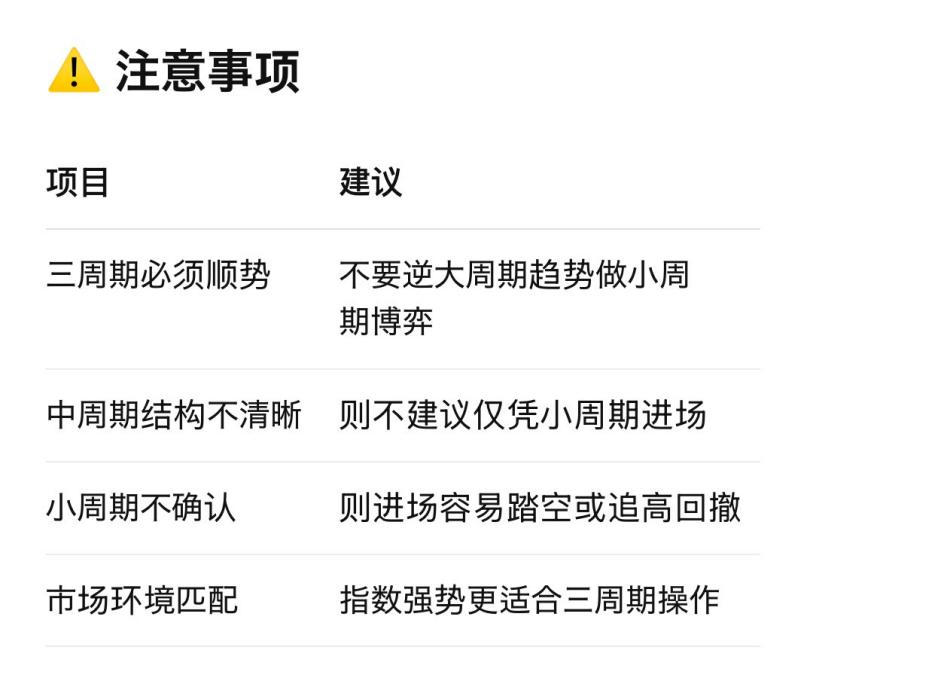

新手小白，给你们一个建议。 3
【做得快的人赚一波，做得慢的人吃一生】 5
【交易员的必经之路】 6
【交易口诀】 10
【关于复盘】 12
【主力行为学】 14
【三周期选股】 16
【顺大势逆小势】 18
【什么才是好股票】 19
【为什么3浪最狠】 20
【关于新手做短线的难点】 21
【请看一下小5浪的特征】 23
【坚定长期买入科创ETF的理由】 25
【短线选手必须要会看的情绪周期】 26
【情绪票 VS 趋势票】 29
【技术票与情绪票操作方式】 31
【情绪票VS趋势票筑顶特征】 32
【情绪票VS趋势票的顶部形态】 34
【情绪票和趋势票分别适合哪类人群？】 37
【趋势交易的交易系统】 40
【趋势股的持股方法】 43
【交易三要素：情绪 筹码 时间】 48
【什么是“龙头战法”】 50
【主动买套】 53
【集合竞价】 57
【平底结构】 59
【空中加油】 61
【个股的买点】 63
【个股的卖点】 69
【缠论三类买点学习总结】 72
【用缠论的背驰理论寻找不同级别的卖点】 74
【量价关系】 77
【量价关系的基本理论】 79
【RSI指标的使用方法】 84
【MACD指标的使用方法】 87
【短期均线（如5日、10日）】 90
【什么是20日线】 91
【什么是盈亏比】 92
【什么是筹码结构】 94
【什么是筹码集中度】 96
【关于筹码峰的使用】 98
【什么是产业周期】 102
【回踩与破位】 104
【如何找支撑位】 106
【卖飞和拿不住】 107
【多空循环的逻辑】 112
【牛市中的仓位管理】 113
【保住本金的重要性】 116
【详细解释缺口理论】收藏版 119
【盈亏比对胜率的影响】 122
【回调与出货的本质区别】 125
【“零轴上死叉”和“零轴下死叉”】 127
【永不被套战法】 129
【520战法】简化版 131
【520战法】（5日+20日均线交易策略） 132
【看盘技巧】 136
日线只做所有均线都在250日线之上的个股。
且多头顺次排列。
买入点5日线。收盘跌破5日线减仓。
20日线加回来。直到5日线下穿20日线死叉离场。
且周线60周线之上的上升趋势。
就只做这一种方式，坚持一段时间看看盈利结果。
没有这种图形就不操作。
遵守纪律。不用每天操作。不要被每天的涨跌裹挟。
目录
新手小白，给你们一个建议。 3
【做得快的人赚一波，做得慢的人吃一生】 5
【交易员的必经之路】 6
【交易口诀】 10
【关于复盘】 12
【主力行为学】 14
【三周期选股】 16
【顺大势逆小势】 18
【什么才是好股票】 19
【为什么3浪最狠】 20
【关于新手做短线的难点】 21
【请看一下小5浪的特征】 23
【坚定长期买入科创ETF的理由】 25
【短线选手必须要会看的情绪周期】 26
【情绪票 VS 趋势票】 29
【技术票与情绪票操作方式】 31
【情绪票VS趋势票筑顶特征】 32
【情绪票VS趋势票的顶部形态】 34
【情绪票和趋势票分别适合哪类人群？】 37
【趋势交易的交易系统】 40
【趋势股的持股方法】 43
【交易三要素：情绪 筹码 时间】 48
【什么是“龙头战法”】 50
【主动买套】 53
【集合竞价】 57
【平底结构】 59
【空中加油】 61
【个股的买点】 63
【个股的卖点】 69
【缠论三类买点学习总结】 72
【用缠论的背驰理论寻找不同级别的卖点】 74
【量价关系】 77
【量价关系的基本理论】 79
【RSI指标的使用方法】 84
【MACD指标的使用方法】 87
【短期均线（如5日、10日）】 90
【什么是20日线】 91
【什么是盈亏比】 92
【什么是筹码结构】 94
【什么是筹码集中度】 96
【关于筹码峰的使用】 98
【什么是产业周期】 102
【回踩与破位】 104
【如何找支撑位】 106
【卖飞和拿不住】 107
【多空循环的逻辑】 112
【牛市中的仓位管理】 113
【保住本金的重要性】 116
【详细解释缺口理论】收藏版 119
【盈亏比对胜率的影响】 122
【回调与出货的本质区别】 125
【“零轴上死叉”和“零轴下死叉”】 127
【永不被套战法】 129
【520战法】简化版 131
【520战法】（5日+20日均线交易策略） 132
【看盘技巧】 136
日线只做所有均线都在250日线之上的个股。
且多头顺次排列。
买入点5日线。收盘跌破5日线减仓。
20日线加回来。直到5日线下穿20日线死叉离场。
且周线60周线之上的上升趋势。
就只做这一种方式，坚持一段时间看看盈利结果。
没有这种图形就不操作。
遵守纪律。不用每天操作。不要被每天的涨跌裹挟。
慢就是快，快就是慢 —— 趋势交易的本质，是“留得住”利润
在股市中，“慢”并不是指行动迟缓，而是指心态沉稳、有节奏地应对波动。很多时候，想“赚快钱”反而最容易被甩下车、踏错节奏；而真正把握趋势、跟随逻辑做票的人，看似慢，却能走得更远、赚得更多。
✅ 做趋势票的几个核心好处：
1.顺势而为，不与市场博弈
•趋势票具备基本面或逻辑驱动，沿着主线走，市场资金自然推动，不需要反复进出猜顶部底部。
2.利润靠“拿住”，不是靠频繁交易
•真正的大钱来自“波段抱住而不是短线搏杀”，趋势一旦形成，回撤是暂时的，懂得“拿住”就是赢的前提。
3.做得“慢”，但节奏是对的
•不追高、不赌消息、不追热点的末端，而是在趋势初启时上车，中段持有，尾段警觉离场，这正是慢带来的效率。
❌ 反之，太“快”反而是“慢”：
•每天追涨杀跌，心态高度紧张，账户起伏剧烈；
•盈亏都在几分几毛里打转，利润留不住、亏损又容易放大；
•看似在“操作”，本质是被市场牵着鼻子走。
慢是定力，是节奏，是顺应市场的智慧。
快是情绪，是焦虑，是对未知的反应。
市场不会奖赏最勤奋的手，而是奖励最稳的心。
股市交易员最应该具备的品质，说到底就是两个字：稳定。
这个“稳定”不是指账户净值不波动，而是指——在充满诱惑与恐惧的市场中，始终保持内在的平衡、逻辑与执行力。
但“稳定”是结果，它来自多个深层的品质支持。以下是交易员最核心的几个关键品质，也是你若想在股市中长期生存、盈利所必须逐步培养的能力：
1. 认知力 —— 理解市场的本质与边界
•明白“交易不是预测，而是概率博弈”；
•懂得市场不讲道理，赚钱靠系统，不靠对错；
•懂得自己无法控制市场，只能控制自己的行为；
•区分“行情好坏”和“自己的能力边界”。
有认知，才不会一赚就膨胀、一亏就崩溃。
2. 纪律性 —— 能控制情绪而非被情绪控制
•严格执行交易计划，不因涨跌而随意改动；
•设止损就止损，不拖延、不犹豫；
•不频繁交易、不冲动交易；
•不拿账户当情绪垃圾桶。
好交易是“平淡如水”的，不是激情澎湃的。
3. 耐心与等待能力 —— 会空仓，能等机会
•耐得住无行情的寂寞；
•守得住底部的煎熬；
•忍得住顶部的诱惑；
•等待“大概率+大胜率”的出手机会。
真正厉害的交易员，80%的时间都在等待。
4. 适应性和进化能力 —— 能顺应市场变化
•市场风格变了，战法也要变；
•跟不上行情，就缩仓减频；
•一招鲜吃遍天的思维在市场会死得快；
•善于总结复盘，不断自我优化系统。
市场唯一不变的是“变化本身”。
5. 抗挫力与心理韧性 —— 不轻易放弃、不被打垮
•连亏五次后还能理性操作；
•一波回撤后不怀疑整个系统；
•在绝望时能守住基本原则；
•理解失败是常态，亏损是成本。
成为高手的前提是“活得足够久”。
6. 执行力 —— 看对方向不如做对操作
•没有执行，策略再好都是空谈；
•很多人死在“看对却没赚到”的路上；
•成功交易员一定是“铁头战士”：计划怎么来，就怎么干。
在股市中，“不动摇、不扭曲、不幻想”最难。
最后送你一句交易老话：
“市场永远是对的，交易员只需要做对一件事——控制自己。”
1. 买横买坑不买竖，横有多长竖有多高
• 买横：横盘时是主力吸筹阶段，调整到位时买入更安全。
• 买坑：股价突然下跌形成“坑”，可能是洗盘或诱空，是较好的低吸机会。
• 不买竖：当股价快速拉升（形成“竖”形走势）时，不要追高，防止被套。
• 横有多长竖有多高：横盘时间越长，未来上涨空间越大。
2. 下跌不言底，反弹不言顶
• 下跌途中不要猜测底部，反弹时也不要妄测顶部，要顺势而为，尊重趋势。
3. 跌出来的机会，涨出来的风险
• 大幅下跌后往往伴随买入机会，而连续上涨后往往伴随回调或出货风险。
4. 高位放量滞涨，坚决出局观望
• 股价在高位放量但涨幅受限，往往是主力在派发筹码，应当及时离场。
5. 大涨之后必有回调，大跌之后必有反弹
• 市场涨跌有节奏，连续大涨后一般有回调压力，连续下跌后往往有修复性反弹。
6. 趋势不明，宁可休息
• 如果市场走势不明朗，不要盲目交易，保持耐心等待趋势明朗。
7. 顺势而为，强者恒强
• 市场中遵循趋势操作，强势股往往在回调后还能继续走强。
8. 短线看量，长线看势
• 做短线时关注成交量的变化，做长线时注重趋势和基本面。
9. 涨时重势，跌时重质
• 在上涨行情中重视趋势，在下跌行情中更看重个股的基本面和价值支撑。
10. 不冲高不卖，不跳水不买，横盘不交易
• 不要在股价快速冲高时卖出，也不要在快速跳水时买入，横盘震荡时保持观望。
一、宏观&消息面（整体市场环境）
•三大指数走势（上证、深证、创业板）：涨跌幅、K线形态、量能变化
•成交量总量：是否放量/缩量，资金是否活跃
•北向资金流向：今日净流入还是净流出，代表外资态度
•政策新闻/宏观数据：央行政策、重要会议、经济数据发布、行业利好利空等
二、板块热点&轮动
•今日最强板块前3-5名：涨幅榜、成交活跃榜
•涨停家数 / 炸板率：判断情绪强弱
•板块持续性：是轮动炒作还是主线强化？有没有资金深挖
•龙头股动向：核心龙头是否涨停or调整，是否开始分歧
三、个股层面
•持仓股表现：涨跌幅、K线、量能、趋势是否良好，有无异动
•买入/卖出复盘：当日交易是否符合交易系统？有没有情绪化操作？
•观察股池更新：有无新机会冒头？前期关注的标的是否出现买点？
四、技术面分析
•大盘和热点板块的K线形态：是突破、震荡还是转折信号？
•均线形态是否改变？ 有没有“多头排列”或“死亡交叉”出现
•成交量变化：是否配合价格运行？（量价关系）
•重要技术指标（MACD、KDJ、RSI等）是否出现背离或反转信号
五、总结和计划
•今日市场情绪总体：强势、震荡、恐慌？
•明日策略计划：继续持有？减仓？换股？观望？
•哪些板块/个股可以作为明日重点观察对象？
•今天有什么值得记录和反思的交易/操作？
一、熊市：
缓跌急涨——主力出货为主，反弹是诱多
1. 主力目的：
撤退、减仓，逐步出货
熊市中，市场情绪低迷，成交量低迷；
如果主力一次性砸盘出货，会引发恐慌暴跌，成本高、不好走；
所以主力倾向于“慢慢压价”，在下跌途中边跌边卖。
2. 急涨的意义：
制造反弹，诱多拉高出货
主力有时会“故意拉升”或借助利好消息制造急涨：
吸引散户进场“抄底”；
套住追涨资金后再开始新一轮下跌；
反弹不是趋势反转，是“出货陷阱”。
主力行为特征：
低调压盘，不引起关注；
突然拉升，引发追涨；
高位放量，借机出货。
二、牛市：
缓涨急跌——主力吸筹为主，急跌是洗盘
1. 主力目的：
建仓、控盘，拉升之前洗盘
牛市中，市场热情高涨，买盘充足；
主力倾向于慢慢推高股价吸筹，不引起监管和散户注意；
控制涨速，有利于长线运作。
2. 急跌的意义：
洗盘、清理浮筹，震出散户
主力故意制造突然下跌，有几个目的：
洗掉短线投机者（不坚定持仓）；
压低成本，让筹码回到自己手中；
制造恐慌，诱空，方便之后更顺利拉升；
急跌不是出货，是吸筹伎俩。
主力行为特征：
缓慢拉升，稳步吸筹；
急跌吓人，实为洗盘；
急跌后放量反弹，拉升继续。
结构性行情的情况下也有牛股和熊股，分析同理同上。
✅ 1. 大周期看方向（是否值得参与）
•判断股价处于长期上升趋势中；
•回避熊市、平台震荡或下跌趋势中的票；
•常用指标：月线均线多头排列、周线上升通道。
示例：若月线MACD刚刚金叉，或周线站稳MA60，可视为“方向确认”。
✅ 2. 中周期看结构（是否处于低吸位置）
•分析个股在日线层面处于哪一波动阶段（启动/调整/突破）；
•寻找日线级别的回调结束点或突破点；
•常用形态：箱体震荡、趋势回踩、W底、旗形整理等。
示例：个股回踩日线20日均线后止跌回升，是低吸区间。
✅ 3. 小周期抓时机（择时进出）
•在大/中周期条件成熟的前提下，使用小周期确认买点；
•等待60分钟级别的放量突破、回踩确认、底背离等信号；
•小周期也决定你是否追高、错过、或低吸成功。
三周期选股的实战流程
步骤一：筛选大周期向上的板块与个股
步骤二：在日线中寻找整理后的突破形态
（如：箱体突破、上升旗形、均线支撑上移）
步骤三：用60分钟图确认入场时机
（如：缩量回踩后企稳、放量上穿均线、MACD金叉）
✅ 满足三周期共振，此时买入成功率高，且风险相对可控。
大周期定方向，中周期选结构，小周期抓节奏。
三者共振出黄金点，趋势反转避其锋。
月线看周期，
周线看趋势，
日线找机会，
分时找买卖点（60分金叉买入，30分死叉卖出）
所谓顺大势就是在大级别（周线）上升趋势里，找小势（日线）下跌回调段入场。
在不同的市场周期里，“好股票”的定义往往各不相同。在牛市中，成长性高、具有题材概念的股票往往更受追捧；而在熊市中，则是那些具备稳健业绩、现金流充沛、抗风险能力强的防御型股票更显得珍贵。投资者往往会根据市场环境的变化而调整“好股票”的标准，这不仅是投资智慧的体现，更是对风险管理的一种必然选择。
市场就像潮水一样，涨潮时船高，退潮时船低；有的公司能乘风破浪，依旧坚挺；有的则随着潮水起落，甚至搁浅于沙滩。因此，投资者要学会在不同的周期中识别真正的好股票，而不是一味盲目追随热门概念或短期的高增长。只有洞察市场周期的变化，并结合企业的基本面、估值水平、行业地位和竞争优势，才能选到真正值得长期持有的好公司。
换句话说，真正的“好股票”并不是一成不变的，而是需要在不同时期、不同市场环境中进行动态评估和甄别的。只有懂得顺势而为、审时度势，投资者才能在资本市场中立于不败之地。
尤其是有色，半导体等周期股，由于供需关系的影响，涨跌浮动会非常的大。上涨周期是可以翻几倍，回调周期可以直接打回原形。
如果你是上涨周期里买到的那它就是好股，如果是回调周期怕是你要骂他三代祖宗了。（例如华友钴业）
•1浪下跌：多数人还以为是正常回调，不重视；
•2浪反弹：有人抄底，市场还有幻想；
•到了3浪，幻觉被击碎，趋势明朗，资金恐慌出逃，“补跌”、“砸盘”、“杀估值”一齐上来；
•所以3浪往往伴随放量、急跌、恐慌盘出清，也叫“绝望浪”。
🧠 实战中的意义：
•如果你在3浪下杀还没止损，那就要小心了，因为它常常是“跌得最狠、反弹最弱”的一段；
•一旦确认3浪来临，不宜盲目抄底，而是应该防守、等待第4浪修复甚至5浪结束才重新介入。
⚠️最应该提到的是2浪结束位置，是大多数散户最容易被诱骗进去被套的最多的位置。牛市尚可解套。熊市的话一浪更比一浪底，很难回本。
所以，普通散户，尽可能不要参与回调浪的任何一笔反弹。耐心轻仓等待大级别的顶底拐点去做就好。
一、新手做短线的难点：
1.短线需要快节奏的买卖决策：不仅考验技术面（如K线、均线、量价关系），还要求严格的风险控制和纪律。
2.心态波动大：新手往往拿不住利润，也容易恐慌止损，频繁追涨杀跌，最终亏损加剧。
3.信息差和经验差：短线需要对市场情绪、热点轮动、资金博弈等有敏锐的洞察，而这正是新手最薄弱的地方。
二、中线的挑战：
1.选股与选时：中线持股一般需要看基本面、行业周期、政策面等，而新手往往缺乏判断能力。
2.持股耐心：中线投资需要熬得住震荡期，很多新手容易被短期波动吓到，导致半途而废。
3.仓位管理：中线需要合理配置资金，新手往往在大涨后追高重仓，在下跌时又割肉。
三、能否同时做好短线和中线？
对于大多数新手来说，同时兼顾短线和中线，难度非常高。因为两者不仅操作逻辑不同，心态管理要求也不一样。短线要快进快出，中线要耐心持有，一旦两种风格混在一起，很容易顾此失彼，操作混乱。
建议：建议先选定一个方向：如果对技术面感兴趣且有时间盯盘，可以尝试小仓位练习短线，积累经验。如果没有太多时间盯盘或者对基本面感兴趣，可以先练习中线投资，比如做趋势股、行业龙头，或者尝试定投宽基指数。切忌同时满仓短线又重仓中线，否则很可能一边割肉，一边踏空。对新手而言，专注于一种风格、练好一套系统，才是王道。
这里不是让你无脑冲的地方，因为C3-1结束之后还有一段回调浪（那里才是你们猛干的地方）
小5浪只是如何见顶而已（时刻准备提裤子走人）
每一小浪的详细特征
① i 浪（初升段）
•小幅拉升，启动迹象不明显，成交量不大。
•技术上可能刚刚站稳均线，比如5日、10日均线上穿20日线。
•很多散户还在观望，主力资金开始建仓。
② ii 浪（回调段）
•幅度可能较深，但不会跌破起涨点。
•经常是**“黄金分割”回调**（回调幅度到 0.382 或 0.618）。
•是洗盘浪，目的是赶走不坚定的持股者。
③ iii 浪（主升段）
•通常是最长、最陡的浪，具备明显爆发力。
•成交量快速放大，趋势得到广泛认可。
•K线呈现大阳线密集，MACD、RSI等同步发出强信号。
④ iv 浪（横盘段）
•调整方式多为平台整理或旗形整理，一般较平稳。
•持仓者会感到“涨不动了”，但又跌不下来。
•是为最后的 v 浪蓄势。
⑤ v 浪（末升段）
•再度上冲，价格可能创新高，但成交量往往未同步放大。
•常见背离现象（如MACD顶背离），表明动能开始衰减。
•部分短线客开始出货，进入震荡
小5浪高点预测
保守目标位：3410-3430
理想目标位：3460-3480
强势延伸浪目标位（小概率）：3530-3550
月线，创业板指2010年6月1日上市后，经历了长达2年半的洗盘吃筹筑底，最后走出了涨幅589%的波澜壮阔的创业板牛市。
同理。科创板指自2019-2020年105家企业开始上市一个小高潮，随后21/8-24/8长达3年的洗盘吃筹筑底，这一次科创牛市难道不值得你坚守期待吗？
个股选一个翻几倍的可能真的不是件容易的事，但是拿着科创ETF有什么难的呢？既不会业绩暴雷，也不会板块退市。
你只需要学一点点均线技术，顶底拐点，看看月线周线做大级别拐点的高抛低吸即可。
上班族的财富密码，中国的科技牛市才刚刚起步。
创业板指从低点到顶用了3年时间。科创板也会走出一番波澜壮阔的牛市。你需要有耐心持仓，定投是最有效平均持仓成本的方法。
普通上班族，每个月拿一部分钱，就像存定期一样存进去，等到牛市结束，你会收获一大笔利润。
中证A500的投资方式也是一样。大跌大买，小跌小买，无论涨跌就坚持每个月定投，直到牛市结束。不要中途下车，有一点利润就跑，那你后面全是追高。看到涨了一倍了你可能都不敢去了。对不对？
什么是情绪周期？
在A股，特别是短线题材股中，市场的资金情绪会像潮水一样 起起落落、有周期律动。
这个周期不靠基本面、不靠估值，靠的主要是 炒作情绪。资金在里面“打来打去”，形成一种情绪波动的节奏，我们就叫它：情绪周期。
情绪周期的六个阶段（核心）
① 潜伏期（冰点末期）
•市场极度冷清，无题材、有题材也不涨
•散户割肉、情绪低落，没人看盘
•龙头股杀跌末期，资金空仓
✅ 应对策略：观察，不操作或轻仓守底部趋势票
核心：这是“情绪转折”的酝酿期！
② 启动期（试探阶段）
•突然一只股打板，或者一个题材异动，出现“首板”
•成交量开始放大，但大部分人还在观望
✅ 应对策略：识别题材和潜在龙头，小仓试水
核心：敢打“首板”，是吃肉的先决条件！
③ 加速期（高潮前夕）
•龙头股2连板、3连板、换手板频现
•板块内高低切不断涌现，赚钱效应明显
•情绪开始升温，开始“高潮预热”
✅ 应对策略：果断上车核心龙头或前排强势股
核心：这是“最赚钱阶段”，但仓位要控制，防止过热
④ 情绪高潮（情绪顶）
•龙头打到4-5板甚至更高，涨停板“批量出现”
•散户蜂拥而上，连“老乡都进场”
•高开低走开始增多，有些炸板、闷杀
✅ 应对策略：快进快出，抓最后一波；控制回撤；开始减仓
核心：高潮=风险，最难但最重要是“见好就收”
⑤ 分化期（退潮开始）
•龙头见顶、开始大阴线杀跌，带动跟风票崩盘
•热点题材无人接力，涨停变少，亏钱效应快速蔓延
✅ 应对策略：坚决离场，空仓等待冰点
核心：“不割就是被割”，别做接盘侠！
⑥ 冰点期（杀跌到底）
•跌停、天地板频现
•市场完全没有热点，情绪冰点
•几乎没人敢买，大家都在避险
✅ 应对策略：轻仓观察，准备“捡便宜”；重新观察新题材的萌芽
核心：“冰点是希望的开始”，下个周期的“第一板”就在这诞生
口诀助记（超实用）：
冰点不动，启动试水，加速重仓，高潮减仓，退潮空仓
实战技巧：
1.每一波行情都有龙头 → 龙头走出三板以上，情绪才会发酵
2.情绪高潮之后不能恋战 → 一炸板就要高度警惕
3.冰点是赚大钱的埋伏期 → 留意“新题材”和“换手首板”
✅ 总结：
情绪周期，是A股短线赚钱的“风向标”
你只要看懂节奏，跟着主力一起跳舞，就能少亏多赚
❌ 盲目抄底、追高补跌股，只会被周期反噬
在市场里混久了，你会发现一个现象：有的股票一飞冲天，几天翻倍，然后又迅速熄火；有的股票缓慢爬升，不声不响地走出一段大行情。这背后，其实是两类完全不同的逻辑——情绪票与趋势票。
很多人把这两者混为一谈，结果容易踏错节奏，赚了指数赔了钱。今天我们就来聊聊，这两类票到底有啥区别，怎么应对才合理。
一、什么是情绪票？
关键词：爆发力、短期博弈、题材驱动、高潮退潮
情绪票通常围绕热点题材快速炒作，比如新能源、AI、减肥药、算力等。市场情绪上头时，资金疯狂涌入，小票尤其容易涨停潮。一两天内爆发，三五天内见顶，节奏极快。
特征：
•强调“接力”逻辑，讲究的是情绪传染；
•高频涨停，多为短线资金博弈；
•没有持续性基本面支撑，更多靠预期炒作；
•高风险高收益，风口一过跌得比涨得还快。
适合人群： 热衷短线、手速快、心态稳、有盘感的交易者。
二、什么是趋势票？
关键词：稳定性、主线逻辑、基本面支持、波段行情
趋势票则走的是“慢牛”路线，背后往往有清晰的基本面或产业逻辑支撑，比如业绩改善、行业拐点、政策扶持等。它们不会一夜暴涨，但会沿着趋势慢慢爬升，涨得稳，跌得慢，适合中线或波段操作。
特征：
•主力深度参与，筹码锁定较好；
•K线结构清晰，多为缓涨少回；
•板块内资金扎实，逻辑能持续发酵；
•不易踏空，但容易被情绪票掩盖关注度。
适合人群： 更偏好中期逻辑、风险承受能力中等、习惯看基本面的投资者。
了解自己，才能选对方向
情绪票和趋势票没有绝对的好坏，只有是否适合你。
你是短线高手，能承受高波动、情绪交易，那情绪票可以是你的主战场；你偏爱稳扎稳打、逻辑清晰，那趋势票才是你的归宿。
别拿短线的心态去做中线的票，也别拿趋势的思路去硬接情绪的飞刀。选对了方向，市场才能成为你的朋友，而不是你的对手。
比如mi姐喜欢做趋势票，你呢？
机构票，主力进场后都会洗盘。
所以不会持续大涨，追涨买入，必定吃套。
一定要买在回调支撑位。然后就拿着别动。
情绪票短线，击鼓传花，高举高打，一定要买主升龙头，追涨买，不建议参与任何回调后的反弹，也不可以看到大阴线就去接飞刀。
做第一段主升是最安全的。
✅ 一、结构节奏上的区别
情绪票筑顶：
•通常节奏快、突然，上涨靠资金推动+情绪共振。
•顶部常见形态是放量长上影、高开低走、大阴包小阳。
•分时急杀，容易出现“天地板”、“核按钮”。
•往往没有明显的出货过程，主力是“情绪退潮一刀切”。
趋势票筑顶：
•节奏较慢，顶部结构通常是横盘震荡、走平变弱。
•常见形态是高位横盘后阴跌、逐步跌破关键均线（如20日、60日）。
•量能逐步萎缩，主力出货有节奏、有层次。
•顶部更像是“盘死”，不是“砸死”。
✅ 二、市场行为特征
情绪票：
•末端常伴随高换手、高关注、连板断板、炸板潮。
•顶部时情绪极度亢奋，但持续性差。
•跌起来非常凶狠，“高位接力者”容易遭遇踩踏。
趋势票：
•更偏机构逻辑，顶部常伴随基本面预期兑现/利好出尽。
•出现趋势拐点信号（如跌破趋势线或跌破前期箱体）。
•跌速慢但杀伤力深，属于“温水煮青蛙”。
✅ 三、主力操盘意图
情绪票主力：
•利用短期炒作、题材催化、公告刺激制造接力盘。
•主力出货非常果断，利用短时间内“砸盘跑路”。
趋势票主力：
•机构建仓周期长，出货更“温柔”，需要市场消化。
•更注重成本保护，会在高位逐步派发，甚至对倒护盘迷惑散户。
✅ 四、操作策略提示
情绪票：快进快出、严守纪律、不贪连板。
趋势票：关注趋势转折信号，跌破关键支撑必须止损。
✅ 一、情绪票的常见顶部形态（特征：快、猛、突变）
1.放量长上影线（高位冲高回落）
•高开冲高，午后跳水收长上影。
•暗示主力资金高位派发、追涨失败。
•常见于连板后的第一次“试探”见顶。
2.炸板断板
•封板失败，炸板放量，甚至全天大震荡。
•市场情绪由亢奋转向恐慌。
•是“情绪退潮”的先兆，尤其危险。
3.天地板 / 高开低走一字断魂
•典型“核按钮”，早盘高开吸引情绪资金，快速跳水封跌停。
•主力吸引跟风盘出货，割韭菜式出清。
•极具杀伤力，常见于龙头票见顶时。
4.高位巨量阴线（大阴包小阳）
•形态上大阴线直接跌破前几天涨幅，吞噬形态。
•情绪票的“终结信号”，不容犹豫。
5.连续缩量下跌（无人接力）
•成交量骤减，市场无人接力。
•涨停板打开后阴跌三天，确认情绪退潮。
✅ 二、趋势票的常见顶部形态（特征：慢、稳、结构性转弱）
1.高位横盘+量能背离
•价格在高位震荡但成交量持续下降。
•说明动能减弱、资金开始出逃。
•是趋势反转的前兆。
2.头肩顶
•经典顶部结构，左肩-头部-右肩。
•跌破“颈线位”是明确卖出信号。
3.三重顶 / 多重顶
•高位多次冲高不过前高。
•显示上方压力极大，主力难以推升。
•适合在二次或三次冲顶失败后出局。
4.箱体震荡+跌破下轨
•高位构筑平台，反复横盘，最终向下跌破。
•跌破通常伴随放量，确认顶部形成。
5.MACD顶背离 / 均线死叉
•技术指标配合：价格创新高，动能指标不创新高。
•均线系统开始走弱，短期均线死叉长期均线。
•是机构出货后的“慢杀”信号。
理解行情背后的逻辑是一方面，更重要的是——你是哪类交易者？
1. 情绪票：适合“短线型选手”
典型特征：
•盘感敏锐，对市场节奏把握好
•心态稳定，能接受高波动带来的压力
•熟悉打板、龙头战法等高频策略
•有时间盯盘，对盘口语言和换手结构有研究
•风险承受能力强，止损果断，收益预期灵活
适合人群举例：
•职业或半职业交易者
•短线爱好者、喜欢刺激与挑战的人
•熟悉题材轮动和游资动向的老手
一句话总结： 情绪票玩的是“速度与胆量”，胜在节奏和执行。
2. 趋势票：适合“逻辑型选手”
典型特征：
•更重视行业逻辑、基本面、政策方向
•喜欢慢慢布局、吃波段行情
•时间不多但愿意提前做功课
•风险偏好中等，更追求稳定收益
•有“拿得住”的耐心，不怕回调，不急进出
适合人群举例：
•有本职工作的上班族/业余投资者
•基金、价值型投资者向下延伸做个股
•喜欢中期布局、跟随主线的趋势派
一句话总结： 趋势票拼的是“方向与耐心”，赢在逻辑和坚持。
选股如择友，选票如择道。最怕的不是选错票，而是用错方式。拿做情绪票的心态去操作趋势票，容易被洗出；反过来拿趋势票的思维去接情绪票，又很容易成为“接盘侠”。
一、核心理念：顺势而为，买强卖弱
•系统类型：中短期趋势交易系统（持仓周期数天到数周）
•适用市场：股票、期货、数字货币等
•交易频率：低频操作，避免频繁买卖
•核心指标：均线系统（MA）、成交量、MACD、趋势通道（ATR或布林带）
二、选股 / 筛选标的
•当前价格运行在中长期均线之上（如20日线上穿60日线）
•放量上涨的个股优先考虑
•成交活跃（有一定换手率），避免冷门票
•行业或板块出现趋势性行情（可选加行业趋势判断）
三、买入逻辑（进场信号）
1.趋势确认（满足以下条件）：
•价格上穿60日均线，形成多头排列（5MA > 20MA > 60MA）
•成交量放大，创阶段新高或放量突破盘整平台
•MACD金叉，柱状图翻红
2.具体入场点（满足趋势确认后）：
•回踩20日线不破，并重新放量上攻
•突破前高或平台压力区（例如箱体上沿）
四、止损机制
•硬止损：买入后跌破前期支撑/20日均线一定幅度（如5%-8%），果断止损
•软止损：趋势破坏，如均线死叉、放量下跌破位
•时间止损：入场后若5-7个交易日内无明显上涨，考虑减仓或撤退
五、持仓管理
•分批建仓（第一笔确认信号，第二笔加仓可设在突破关键位后）
•最多3~5只标的，分散风险
•不重仓一只，单只仓位不超过20%-30%
•设置动态止盈（如下）
六、止盈策略
•固定目标止盈（如上涨15%-20%减仓）
•移动止盈（随趋势推移）：
•每日上移止盈线：可用10日均线 / ATR下轨 / 前期支撑位
•MACD死叉+跌破20日线可考虑全清
七、出场信号（卖出）
•跌破趋势线或关键均线，并放量
•出现放量长阴或反转K线（如黄昏之星、射击之星）
•MACD死叉、量价背离严重
•突破失败并快速回落（假突破）
八、复盘与优化
•每一笔交易记录进场点、理由、盈亏、改进点
•每月/季度回顾胜率、盈亏比、交易频率，持续优化系统
一、趋势股的买入方法
买入趋势股的关键是：
1.选择具备上涨逻辑的股票
2.在趋势启动或回调结束时买入
3.结合量价关系、形态突破和资金动向，判断买入时机
1. 基本面筛选——选择具备上涨逻辑的个股
趋势的核心是基本面推动，即市场中存在某种“利好”或“催化剂”，推动趋势股持续上涨。
•行业景气度上行（如新能源、AI、芯片等）
•公司业绩持续增长（收入和利润增长）
•政策利好支持（国家政策扶持或产业发展方向）
•资金持续流入（北上资金、机构资金加仓）
✅ 例子：
•AI板块：AI技术突破 → 产业链爆发 → 资金集中流入
•芯片板块：全球缺货 → 芯片涨价 → 公司业绩暴增
2. 技术面筛选——判断趋势的启动信号
趋势启动往往伴随以下信号：
✅ （1）突破平台或长期压力位
•突破箱体整理或关键均线（如60日、120日均线）
•放量突破，确认多头趋势形成
✅ （2）均线多头排列
•5日线、10日线、20日线、60日线呈现多头排列
•股价沿着均线向上，均线形成明显的上升趋势
✅ （3）量价配合良好
•上涨放量，下跌缩量 → 资金在积极推动
•主升浪中成交量逐步放大，表明资金介入
✅ （4）MACD、KDJ等指标金叉
•MACD红柱放大，零轴上方金叉
•KDJ超跌金叉，提示趋势反转
✅ （5）突破回踩不破，再度拉升
•突破后回踩确认支撑有效，是低吸的好机会
3. 买入时机
➊ 突破买入法（趋势启动）
•放量突破关键压力位
•回踩确认支撑后，缩量回踩时低吸
✅ 示例：
•股价长期在60日线下方整理
•放量突破60日线
•回踩60日线后获得支撑 → 果断买入
➋ 回调买入法（趋势延续）
•趋势股在上涨途中，通常会有技术性回调
•逢回调至关键支撑位或20日线、60日线附近低吸
✅ 示例：
•股价上涨→短期回调至20日线→回踩企稳
•企稳后，量能恢复 → 低吸
➌ 整理突破买入法（趋势加速）
•股价在平台整理中，成交量逐渐萎缩
•放量突破平台，突破收盘站稳 → 加速上行信号
✅ 示例：
•突破区间震荡箱体
•放量突破站稳 → 顺势加仓
二、趋势股的持股心态
持有趋势股的核心在于：
•拿住大波段
•克服短期波动的干扰
•不被市场噪音影响
1. 避免“卖飞”——趋势不变不下车
•趋势股最大的特点是“涨一波、调整一波”，但趋势保持上行。
•如果趋势未破坏（如未跌破20日线、60日线），就不轻易卖出。
✅ 持股策略：
•主升浪中，保持耐心持股
•趋势未破坏，不主动卖出
2. 容忍短期回调
•趋势股在上涨途中，往往伴随短期回调或震荡洗盘。
•短期洗盘 ≠ 见顶，只要趋势保持，多头格局就不必恐慌。
✅ 持股策略：
•回调缩量，缩量调整无需恐慌
•参考20日线、60日线作为防守位
3. 采用“移动止盈”策略
•股价沿趋势上涨，设置移动止盈位，防止利润回吐。
•常用止盈方法：
•5日线止盈法：突破主升浪，沿5日线持股
•ATR（平均波幅）止盈法：设置一定波动幅度，触及则止盈
✅ 示例：
•突破回踩不破5日线 → 继续持有
•失守5日线 → 移动止盈，部分止盈
🧠 4. 关注主力动向
•趋势股在上涨过程中，主力可能通过震仓、洗盘方式清洗浮筹。
•观察量能和资金流向，主力未撤退，趋势未结束。
✅ 持股策略：
•成交量逐步萎缩，股价仍沿均线上行 → 持股
•突然放巨量破位 → 警惕主力撤退
🧠 5. 设定止损位，控制回撤
•即使是趋势股，趋势一旦破坏，也要果断止损。
•常见止损位：
•突破支撑位失守
•跌破20日线或60日线
•MACD死叉或放量下跌
✅ 持股策略：
•突破失败 → 止损
•下破趋势支撑 → 止损
💡 总结：
✅ 选择基本面支撑的强势股
✅ 在趋势启动或回调结束时介入
✅ 趋势未结束不轻易卖出
✅ 控制回撤，分批止盈
✅ 不做“短期波动的牺牲品”，只做“趋势的跟随者”
趋势不破不下车，顺势而为才能赚大钱！
一、情绪：交易的内心控制器
情绪指的是交易者对市场涨跌的感受，包括贪婪、恐惧、焦躁、兴奋、懊悔等。很多人因为情绪无法自控而追高杀跌、频繁交易，结果亏损累累。
•贪婪：行情上涨就怕错过，盲目加仓或追涨；
•恐惧：行情下跌时又害怕亏损扩大，不敢加仓或者割肉离场；
•后悔：卖了之后涨了就懊悔，买了之后跌了就心态崩了。
交易要赚钱，情绪管理是第一关，要学会做到心平气和、按计划操作，而不是人云亦云，或者被一时的涨跌牵着走。
二、筹码：底层的交易成本
筹码代表的是资金布局和仓位管理，也就是你在某个价位的平均成本、持仓量和持仓结构。大资金建仓往往是分批进出，而散户常常一把梭哈。
•如果筹码太集中在某个价位，就容易被市场反向打压（比如主力洗盘）。
•如果分批建仓，就可以在不同价位获得平均成本的优势。
•轻仓试错、重仓加码，是控制风险、把握趋势的关键。
所以筹码管理不仅是控制风险，也是实现收益最大化的核心。
三、时间：市场周期与耐心
时间是交易的沉淀器，也是检验策略的必修课。
•有的行情需要耐心等待，比如大盘走出底部或者等待回踩确认。
•有的机会稍纵即逝，需要果断进出，比如短线突破或者突发利好。
时间周期的选择也直接决定了你的心态和操作节奏：
•做日内的，看分时图，快进快出；
•做波段的，看日K、周K，持仓周期可能几天到几周；
•做长线的，注重趋势的积累和业绩兑现，要忍受震荡洗盘。
学会给交易留足时间，不急功近利，才能真正跑赢大盘。
“龙头”就是某一轮行情、一个题材、一个板块里最先涨、涨得最猛、带动最强的人气核心股。
“龙头战法”就是：
通过辨别出市场当前的最强股，快速跟随，踩中节奏，在板块轮动中吃到主升浪或者情绪高潮的钱。
它是炒作情绪周期中最核心的交易逻辑。
龙头股具备的典型特征：
1.第一个涨停，且连续打板
2.板块内最先启动、最先加速
3.涨停打开后迅速回封
4.换手充分，承接有力
5.题材叙事强、市场关注度高（新闻+舆情+资金）
龙头战法核心步骤（口诀版）：
第一步：抓首板（辨龙）
板块异动→关注谁第一个涨停→成交量 & 封单结构合理 → 确定“潜在龙头”
✅ 小贴士：
•不一定买首板，但要识别谁是第一强势
•换手超10%，封单大、快速封板，才是真强，不是一字板那种割韭菜
第二步：追二板（卡位）
龙头股打出连板，资金聚焦，开始“龙头选拔”
✅ 实战重点：
•二板必须迅速封住 → 强势龙头特征
•若二板失败，可能是“前排卡位失败”，等待板块内补涨龙
第三步：三板定性（确认龙）
三板以上必须换手健康、高位放量上涨且回封强势，市场开始一致认可它是龙头
✅ 技术特征：
•开盘强、震荡小、午后封板强，缩量封板或抱团封死 → 才是真正走出来的“核心龙头”
第四步：四板五板（情绪高潮）
龙头进入主升浪，带动情绪高潮，甚至带崩整个板块
✅ 注意节奏：
•再往上，风险急剧增加
•高位加速板=资金疯狂抢筹=准备收割
龙头战法适合什么时候用？
✅ 板块炒作初期
✅ 市场情绪回暖、题材轮动清晰
✅ 有新周期开启时，比如政策利好、新能源、算力、AI等突发风口
❌ 不适合弱市、熊市、缩量震荡期
龙头战法必懂三句话：
1.龙头不是你选出来的，是市场打出来的
2.龙头是走出来的，不是看出来的
3.只要你还在思考它是不是龙头，那它还不是龙头
实战建议：
•第一板观察，第二板跟踪，第三板确认
•要敢打板，也要敢止损（龙头破位很猛）
•把握好“上车时间”比“预判题材”更重要
•跟着市场走，尊重强者，不抄底、不赌反包、不抢反弹
✅虽然这不是我的风格。喜欢短线的也可以看看。
既然他可以在市场中存在很多年的战法，必然有他的道理。
在股市中，“主动买套儿”指的是投资者在明知道可能会短期亏损的情况下，依然主动买入股票，并愿意接受短期的浮亏，期待未来股价回升或趋势反转，从而获得更大的收益。
🔎 为什么有人会“主动买套”？
1. 看好长期趋势，短期下跌被认为是“更好的买入机会”
•投资者可能认为当前的下跌是由于短期的市场情绪或技术性回调，并不改变股票的长期基本面。
•他们愿意在股价下跌时“低吸”，等待趋势回升，从而获得更大的收益。
✅ 例子：
•某只龙头股因市场情绪下跌，但公司基本面优秀，资金认为是“黄金坑”，于是主动买入，等待反弹。
2. 为了降低持仓成本，采取“做T”或“摊薄成本”策略
•投资者可能在高位被套后，选择在更低的位置补仓，目的是拉低整体持仓成本。
•通过反复“做T”（在波动中低吸高抛），来降低持仓成本，期待未来解套。
✅ 例子：
•你在100元买了一只股票，股价跌到90元，你在90元再买一部分，把平均成本降到95元，等股价回到95元更容易解套。
3. 短期主动承受亏损，布局更大的行情
•有时候，市场在重大利好落地前可能会有洗盘或震荡，主力为了清洗浮筹，可能制造恐慌盘。
•资金可能选择在调整阶段“抄底”，承受短期下跌压力，期待利好兑现后的上涨。
✅ 例子：
•重大政策或公司利好消息即将公布前，主力可能打压股价，部分聪明资金趁机吸筹，提前埋伏。
4. 防止踏空，提前布局
•资金担心股价在底部震荡时突然拉升，因此选择提前布局，即使短期可能被套也不愿错过未来的行情。
✅ 例子：
•看到市场即将企稳反弹，但还没完全见底，部分资金提前买入，愿意承担短期回调的风险，防止错过反弹。
5. 博弈“政策底”或“市场底”
•在市场极度恐慌时，有资金可能主动抄底，期待市场触底反弹。
•即使短期可能继续下跌，资金也愿意博弈政策救市或市场自然修复带来的机会。
✅ 例子：
•市场连续暴跌，成交量极度萎缩，但政策开始放出宽松信号，部分资金可能开始提前埋伏。
主动买套的核心逻辑：
•敢于在市场低迷或不确定性中提前布局，这通常是聪明资金（如主力或机构）在建仓或吸筹时的行为。
•但前提是：对市场有清晰的认知和判断，并且有承受短期波动的能力。
•如果是盲目追高或在趋势走坏时补仓，那可能是“被动加仓”，而不是真正的“主动买套”。
风险提示：
1.主动买套不等于盲目抄底：
•需要结合公司基本面、市场趋势、量价结构来判断。
•不是所有下跌都是“黄金坑”，有时候可能是“无底洞”。
2.止损和资金管理很重要：
•即使是主动买套，仍需要设定合理的止损位，防止趋势恶化带来更大的亏损。
3.不能频繁摊低成本：
•如果趋势明显走坏，频繁补仓可能会导致亏损扩大，最终被深度套牢。
✅ 总结：
“主动买套儿”是一种基于对未来趋势的判断，承受短期浮亏，布局长期收益的策略。聪明资金通常会在下跌中吸筹，利用市场情绪波动来为未来的上涨做好准备。
主动买套的前提是：
•明确的逻辑（政策面、基本面、资金面）
•良好的资金管理（控制仓位、设置止损）
•承受短期波动的心理准备
如果这些条件不具备，主动买套可能会演变成“被动深套”。
早盘集合竞价的挂单时间通常为每个交易日的上午9:15至9:25。具体时间安排如下：
9:15-9:20：投资者可以挂单、撤单。
9:20-9:25：只能挂单，不能撤单。
9:25:系统根据挂单情况撮合成交，形成开盘价。
1. 观察市场情绪
•竞价量价关系：集合竞价的成交量和价格反映了市场对个股或指数的初步看法。
•竞价涨跌幅：如果个股高开或低开幅度较大，可能意味着有突发消息或资金介入。
2. 识别主力资金动向
•异常高开或低开：有些股票可能出现超预期高开（强势信号）或低开（利空打压）。
•封单情况：封单量大且稳定的股票，可能有强庄资金关注，反之封单不断撤单的情况，可能是诱多或诱空。
3. 竞价阶段的策略
•高开判断是否有持续性：
•温和高开（1%-3%）：一般是资金关注，但仍需确认盘中走势。
•大幅高开（5%以上）：要警惕高开低走，尤其是消息刺激的个股。
•低开关注是否有承接力：
•温和低开（-1%~-3%）：可能是洗盘，关注回升情况。
•大幅低开（-5%以上）：可能是重大利空，谨慎接盘。
4. 结合盘口和量能判断
•大单扫货 vs. 小单成交：如果高开时伴随大单扫货，可能是真实资金进场，否则可能是诱多。
•竞价成交量是否放大：若成交量远超前几日均值，可能有资金抢筹，反之则可能是散户跟风。
5. 结合大盘和板块热点
•如果竞价期间大盘指数或板块普遍高开，可能是市场整体趋势较强。
•如果个股高开，但大盘和行业未跟随，则可能是个股消息刺激，持续性存疑。
总结：早盘集合竞价的关键点
1.关注竞价量价，判断市场情绪
2.识别主力资金动向，避免诱多或诱空
3.结合高低开幅度，判断个股的开盘强度
4.观察盘口和量能，确认买盘和卖盘的强弱
5.结合大盘和板块热点，避免脱离市场节奏
一、什么是“平底结构”？
平底结构是指股价在一段时间内多次下探到相似的低点但未跌破该低点，形成一个水平支撑区域，这个区域就像是一个“平底”。它反映出市场在该价位有强支撑，空头打压无效，买盘积极承接。
二、形态特征：
1.多个低点处于相似价位（误差不大）
2.每次回落都止步于相近的低点
3.时间跨度通常为几天至几周
4.成交量逐渐缩小或在突破时放大
三、技术含义：
•支撑牢固：说明该价格区域有大量买盘，空方难以打破支撑。
•蓄势待发：当股价反复震荡打底，市场情绪趋稳，一旦放量突破阻力位，往往会引发一轮上涨行情。
•趋势反转信号：常见于下跌趋势末期，属于底部反转形态的一种。
四，注意事项：
•如果跌破“平底”，说明支撑失效，技术破位需止损
•需要结合其他指标（如MACD底背离、量能分析）综合判断
•平底结构适合做右侧交易，即等突破后再介入
一、什么是“空中加油”？
定义：
“空中加油”指的是股价在一波强势上涨之后，并不深度回调，而是在高位横盘或窄幅震荡整固，随后再次突破上行的技术形态。
形象地说：
上涨途中 = 飞机高空飞行
横盘整理 = 空中加油
继续上涨 = 加油后加速前进
二、技术分析视角
1. 为什么不是顶部？
•整理期间没有明显放量出货信号；
•主力不急于出货，而是控盘蓄势；
•没有破位下行，只是暂缓上攻。
2. 与“旗形整理”或“上升三角形”类似
•有时“空中加油”会呈现出类似旗形或三角形的整理形态；
•本质都是上涨途中的中继形态。
三、实战意义
✅ 对投资者来说，“空中加油”是：
•强势股续涨信号；
•可作为加仓点或二次买入点；
•更加稳健的入场位置，相比第一波启动风险更低。
📉 风险提示：
•伪“空中加油”也存在，若整理后放量下跌则可能是出货；
•判断标准是是否能有效突破横盘区域的上沿，并伴随量能配合。
四、心态与操作建议
•不要追高：发现空中加油形态时，等待突破确认加量入场。
•设置止损：若整理区下轨被有效跌破，及时止损。
•量价配合是关键：突破必须带量，无量突破要谨慎。
五、总结：
“空中加油”，是强者暂歇，是为了飞得更远。看清形态，顺势而为，方可借势腾飞。
主要围绕 趋势、支撑、形态、量价关系、技术指标 等多个维度进行判断。不同交易风格（短线、波段、长线）对应的买点策略也有所不同。
1. 趋势买点——顺势而为
（1）上涨趋势中的回调买点
•适合 波段和趋势交易者，核心是 低吸，不追高。
•买点特征：
•股价处于上升趋势（长期均线向上）。
•回调至重要支撑位（如 20日均线、趋势线、前期中枢下沿）。
•回调缩量，企稳放量反弹。
•确认信号：
•K线出现止跌形态（如 十字星、阳包阴、锤子线）。
•技术指标共振（如 MACD金叉、RSI超卖反弹）。
•实战案例：
•强势股回踩5日/10日均线企稳是短线买点。
•波段股回调至20日/60日均线不破，是中期买点。
（2）突破买点
•适合 短线交易者和突破追涨策略。
•买点特征：
•股价突破重要阻力位（如 前期高点、箱体上沿）。
•放量突破，成交量显著放大。
•突破后 回踩确认不破支撑，再度放量上涨。
•确认信号：
•放量突破+回踩不破。
•MACD金叉，KDJ向上，布林带上轨打开。
•风险控制：
•若突破 无量、突破失败快速跌回，要果断止损。
2. 形态买点——经典形态识别
（1）W底（双底）买点
•适合 中短线交易者，常见于 下跌趋势末期。
•买点特征：
•股价 两次探底，第二次低点不破前低。
•颈线突破后回踩不破，确认反转成立。
•成交量在第二个底部出现明显放大。
•确认信号：
•MACD形成 底背离 并金叉。
•价格突破 颈线位 后放量拉升。
（2）头肩底买点
•适合 趋势反转交易者。
•买点特征：
•左肩—头—右肩 结构明显。
•右肩回调时 量能缩小，然后突破颈线放量拉升。
•确认信号：
•颈线突破后 回踩不破即是买点。
（3）三角形突破买点
•适合 短线交易者，尤其是 突破交易策略。
•买点特征：
•股价收敛整理，波动幅度缩小。
•突破上轨放量即是买点。
•确认信号：
•量能 逐步放大。
•突破当日或次日不破突破点。
3. 量价买点——成交量配合
（1）缩量回调+放量反弹
•适合 趋势交易者，适用于 上涨趋势中的低吸买点。
•买点特征：
•回调缩量（主力未出货）。
•反弹放量突破短期压力。
（2）放量突破+回踩确认
•适合 短线交易者。
•买点特征：
•放量突破关键压力，如 箱体上沿、重要均线。
•回踩缩量，确认支撑有效 后拉升。
4. 技术指标买点
（1）MACD金叉
•适合 趋势交易者，判断趋势转强。
•买点特征：
•DIF线上穿DEA线，形成 金叉。
•0轴下方金叉，属于超跌反弹。
•0轴上方金叉，属于趋势延续。
（2）RSI低位钝化+回升
•适合 超跌反弹交易者。
•买点特征：
•RSI < 30，进入超卖区间。
•RSI向上突破 30/50，反弹成立。
（3）布林带下轨反弹
•适合 趋势回调买入。
•买点特征：
•股价触及布林带下轨，并出现止跌信号。
•随后股价 收回中轨，确认反弹。
5. 缠论买点（高级）
（1）一买点
•买点特征：
•下跌趋势形成中枢，随后 离开中枢反弹。
•短期突破前一高点，形成反转信号。
（2）二买点
•买点特征：
•突破中枢后回踩不破。
•反弹确认趋势延续。
（3）三买点
•买点特征：
•趋势加速阶段，确认新一轮上涨行情。
6. 结合大盘、市场情绪
•大盘强势时，买点成功率更高。
•市场热点板块，更容易出现爆发式行情。
•个股量能、筹码集中度 也是重要参考。
7. 买点的风控与策略
（1）设置止损
•若买入后 股价跌破关键支撑，果断止损。
•一般止损点设置在：
•趋势买点：跌破 趋势线。
•形态买点：跌破 形态颈线或箱体底部。
•突破买点：突破失败 回落至原区间。
（2）资金管理
•短线仓位轻，快进快出。
•趋势交易可分批建仓。
最终建议
•多种买点结合使用，不能单看一个信号。
•实战练习+复盘，提高买点判断的准确性。
•严守纪律，严格止损，提高资金管理能力。
这样，你的买入成功率会大大提升！
比买点更重要，能否保住利润、防止亏损扩大，决定了最终收益。卖点可以分为止盈卖点、止损卖点、趋势反转卖点等。
1. 止盈卖点（获利了结）
（1）目标位卖出
•方法：预设涨幅目标，如20%、50% 或技术目标位（如前高）。
•适合人群：波段/短线交易者。
•策略：
•上涨乏力，滞涨信号（连续上影线、量能缩小）。
•涨幅过大，偏离均线（如偏离20日均线过远）。
•压力位附近缩量滞涨（如前期高点、箱体上沿）。
（2）放量滞涨卖出
•方法：股价大涨，但成交量极度放大，第二天无力新高。
•适合人群：短线/波段交易者。
•特征：
•天量天价：历史最大成交量出现，随后股价冲高回落。
•三连阳放量滞涨：连涨3天以上，最后一天冲高回落。
（3）加速上涨后卖出
•方法：股价短期内出现连续涨停或大阳线，趋势进入疯狂阶段，随后成交量异常放大。
•适合人群：短线交易者。
•特征：
•日线K线呈现“陡峭”形态，如“高台跳水”信号。
•上涨角度过陡（60°以上），短期涨幅超50%以上。
2. 止损卖点（亏损控制）
（1）跌破重要支撑卖出
•方法：股价跌破趋势线、均线支撑（如20日、60日均线）。
•适合人群：所有交易者，防止深套。
•特征：
•跌破20日/60日均线，且反抽无力。
•跌破前期重要支撑位（如前低、箱体底部）。
（2）放量下跌卖出
•方法：股价高位放量大跌，可能是主力出货信号。
•适合人群：短线/波段交易者。
•特征：
•高位放量长阴线（跌幅5%以上，放量）。
•跌破重要支撑，并且放量加速下跌。
（3）MACD死叉卖出
•方法：MACD高位死叉，DIF线向下穿DEA线。
•适合人群：波段交易者。
•特征：
•股价创新高，但MACD未创新高（顶背离）。
•死叉出现后，股价跌破5日均线，反弹无力。
3. 趋势反转卖点
（1）破位卖出
•方法：股价跌破上升趋势线、均线系统，说明上涨趋势结束。
•适合人群：波段/趋势交易者。
•特征：
•股价跌破60日均线，并且反抽无力。
•跌破长期趋势线（如半年线、年线）。
（2）双顶/头肩顶形成
•方法：股价形成M头（双顶）、头肩顶形态，跌破颈线后卖出。
•适合人群：中长线交易者。
•特征：
•股价两次冲高失败，形成双顶。
•跌破颈线后，放量加速下跌。
（3）高位放量阴线卖出
•方法：股价在高位出现放量大阴线，尤其是长上影线或吞没形态。
•适合人群：短线/波段交易者。
•特征：
•股价创新高后，次日大阴线吞没前阳线。
•放量下跌，跌幅超过5%。
总结
1.短线交易：关注放量滞涨、技术形态破位。
2.波段交易：止盈目标位卖出，或者趋势转弱时卖出。
3.趋势交易：趋势破坏（跌破关键均线、趋势线）时卖出。
4.无论任何风格，严格止损，避免亏损扩大。
最终，结合市场情绪、技术分析、资金管理，制定适合自己的卖出策略，才能实现长期稳定盈利！
第一类买点：趋势回调中的背驰点
位置：在一段上涨趋势中，首次回调形成的低点，且该回调出现背驰现象。
特征：回调力度减弱，动能背离，预示可能止跌反弹。
第二类买点：中枢震荡后的突破点
位置：价格在中枢区域震荡后，向上突破中枢上沿的位置。
特征：趋势确认，突破中枢，预示新一轮上涨开始。
第三类买点：趋势延续中的回调确认点
位置：在第二类买点后的上涨过程中，出现小幅回调后再次上攻的位置。
特征：回调幅度小，趋势延续，适合加仓或跟进。
一、什么是“背驰”？
“背驰”是技术分析中一个用来识别趋势终结信号的重要概念。通俗地说，它意味着价格创新高/新低时，动能指标（如MACD、成交量）却没有同步创新高/新低，显示市场“有价无力”：
•多头背驰：价格创新高，动能未创新高 —— 暗示上涨乏力，可能形成“顶部”
•空头背驰：价格创新低，动能未创新低 —— 暗示下跌动能衰竭，可能形成“底部”
二、“不同级别的背驰”是什么意思？
级别，指的是背驰发生在哪一个时间周期或结构上：
•小级别背驰（如1分钟、5分钟K线）：产生的是小级别的调整或顶部，持续时间短，空间有限。
•中级别背驰（如15分钟、30分钟）：对应中期波段调整或反转。
•大级别背驰（如日线、周线）：则可能形成阶段性顶部或主趋势的反转，带来持续数周甚至数月的调整。👆实战举例说明
1.5分钟MACD顶背驰：
•通常意味着一段快速上涨即将结束，短期调整或震荡在即，适合日内T+0减仓操作。
2.30分钟级别顶背驰：
•通常出现在阶段主升浪尾部，是波段级别卖点，可能引发3–5个交易日的调整。
3.日线级别顶背驰：
•很多A股大盘见顶信号就是通过日线甚至周线背驰确认的。一旦确认，往往意味着阶段性顶部成立，指数或龙头股可能开始一轮主跌浪。实战应用建议
•操作策略要和背驰级别匹配：
小级别背驰只适合短线高抛，不能轻易做空趋势；大级别背驰则可能需要减仓离场或反向布局。
•多级别联动更精准：
若5分钟、30分钟、日线出现共振背驰信号，通常是极佳的转折点判断信号。
结语
“不同级别的背驰产生不同级别的顶，调整周期也不同”是一句包含交易节奏与风险控制逻辑的核心口诀。
它提醒我们：不只要看“有没有背驰”，更要看“在哪个级别背驰”。
趋势的结束不是随机的，而是有迹可循的。懂得识别背驰级别，才能做对时间与仓位的判断。

还有一个词叫“背离”，“背驰”指的是面积，“背离”指一个点。背离看DIF值的变化。而背驰是看红绿柱的面积变化。
1. 量增价涨
•意思：成交量放大，价格上涨。
•解读：主力资金积极介入，买盘强劲，是一种良性的上涨信号，趋势可能延续。
•通常出现在：上涨初期或突破关键阻力位时。
2. 量增价跌
•意思：成交量放大，但价格下跌。
•解读：抛压沉重，可能是主力出货的表现。短期内有下跌风险。
•通常出现在：顶部区域或者利空消息后。
3. 量缩价涨
•意思：价格在上涨，但成交量却在减少。
•解读：上涨动力不足，买盘跟进乏力，可能是反弹或者诱多。需警惕后市回落。
•通常出现在：反弹末期或临近压力位。
4. 量缩价跌
•意思：成交量减少，价格也下跌。
•解读：市场处于观望阶段，卖压不强但买盘也少，往往是一种“缩量调整”。
•通常出现在：下跌末期或横盘整理阶段，可能是筑底信号。
5. 无量上涨 / 下跌
•无量上涨：上涨中成交量没有放大，说明上涨乏力，可能随时回落。
•无量下跌：下跌中成交量很小，表示抛压不强，有止跌可能。
一、量价关系的基本理论
1. 价为因，量为果
•价格的上涨或下跌是市场买卖力量博弈的结果，成交量是这种力量的直接反映。
•价格的波动通常会带动成交量的变化，反之，成交量的变化也可能引发价格的调整或突破。
2. 量价关系的本质是供需关系
•成交量代表了市场中买卖双方的活跃程度。
•成交量增加 → 市场交易情绪高涨
•成交量减少 → 市场交易情绪低迷
•价格代表了市场在供需力量平衡下的最终结果。
•价格上涨 → 需求大于供给
•价格下跌 → 供给大于需求
3. 成交量具有领先性
•在趋势形成和变化的过程中，成交量通常会领先价格变化。
•量先行，价跟随 → 成交量的变化可以作为市场趋势转折的信号。
二、量价关系的经典模型
根据价格与成交量的配合情况，量价关系可以分为四种基本形态：
1. 价涨量增——趋势强化（健康上涨）
•价格上涨 + 成交量放大
•代表市场买方力量增强，资金大量流入，趋势具有持续性
•主力积极做多，散户跟风效应增强
✅ 解读：
•成交量持续放大，价格稳步上涨 → 牛市或强势上涨趋势
•典型的“放量突破” → 有望形成持续的上涨行情
2. 价跌量增——趋势反转或下跌加速
•价格下跌 + 成交量放大
•代表市场抛压加大，恐慌盘或止损盘大量涌现
•市场可能进入下降趋势，或者处于趋势反转阶段
✅ 解读：
•下跌初期放量 → 市场有可能探底
•下跌末期放量 → 底部有望出现
3. 价涨量缩——趋势衰竭（上涨乏力）
•价格上涨 + 成交量萎缩
•代表市场跟风资金不足，买盘力量不够
•可能是上涨趋势的末期，或主力在拉高出货
✅ 解读：
•若上涨中成交量持续萎缩 → 谨防诱多或假突破
•可能出现“滞涨”或“拉高出货”行为
4. 价跌量缩——下跌衰竭（即将止跌）
•价格下跌 + 成交量萎缩
•代表市场抛压不足，恐慌盘基本出清
•市场或处于底部区域，可能酝酿反弹
✅ 解读：
•若缩量下跌接近重要支撑位 → 可能出现技术性反弹
•若缩量下跌持续 → 市场可能进入筑底阶段
三、量价关系的常见形态
1. 底部放量 → 见底信号
•市场在下跌过程中出现“底部放量”，可能是抄底资金入场。
•若底部区域持续放量 → 代表筑底成功，可能迎来反弹或反转。
✅ 典型信号：
•出现底部放量长阳线 → 有望形成底部反转
2. 天量天价 → 见顶信号
•市场在上涨末期，出现“天量天价”现象。
•巨量伴随价格见顶，通常是主力在派发筹码。
•成交量极度放大后，市场往往出现快速回调。
✅ 典型信号：
•高位放量大阴线或“断头铡刀”形态 → 可能是顶部信号
3. 缩量横盘 → 蓄势待发
•市场经过一轮上涨或下跌后，成交量大幅萎缩。
•价格窄幅波动，显示市场在震荡筑底或蓄势待突破。
✅ 典型信号：
•在重要支撑位缩量横盘 → 可能是底部蓄势
•在重要阻力位缩量横盘 → 可能是假突破或假回调
4. 放量突破 → 变盘信号
•市场长时间横盘整理后，突然放量突破。
•放量突破压力位或支撑位，可能引发趋势性行情。
✅ 典型信号：
•突破时成交量持续放大 → 代表趋势可能延续
•突破后缩量回踩支撑 → 可能确认突破有效
四、特殊情况
1. 无量上涨 → 谨慎看多
•价格上涨，但成交量未跟随放大 → 可能是假上涨或诱多。
•成交量未能有效放大 → 上涨动能不足，可能引发回调。
2. 无量下跌 → 谨慎看空
•价格下跌，但成交量未跟随放大 → 可能是洗盘或震仓。
•市场未出现恐慌性抛售 → 下跌幅度可能有限。
五、量价关系的实战应用
1. 强势上涨中看“放量”
•连续上涨过程中，若伴随成交量持续放大 → 趋势健康
•若量能萎缩但价格继续上涨 → 谨防诱多
2. 突破关键位置看“成交量”
•突破阻力位或支撑位时，若量能同步放大 → 有效突破
•突破但量能不足 → 可能是假突破
3. 震荡整理时看“缩量”
•震荡期间成交量持续萎缩 → 可能是蓄势
•若放量突破震荡区间 → 可能是趋势启动信号
（1）超买超卖——寻找买卖点
•RSI > 70：市场进入超买状态，价格可能回调，考虑卖出
•RSI < 30：市场进入超卖状态，价格可能反弹，考虑买入
•RSI > 80 或 RSI < 20：极端超买或超卖，更容易发生回调或反弹
应用技巧：
•超买超卖信号适用于震荡行情，在单边趋势中可能失效。
•结合K线形态、支撑阻力位，提高信号可靠性。
（2）RSI的金叉与死叉
•RSI金叉（买入信号）：短周期RSI上穿长周期RSI，表明市场由弱转强
•RSI死叉（卖出信号）：短周期RSI下穿长周期RSI，表明市场由强转弱
应用技巧：
•RSI金叉配合股价放量突破，买入信号更强
•RSI死叉配合股价跌破重要支撑，卖出信号更可靠
（3）RSI的中轴判断趋势
•RSI > 50：市场处于多头趋势，买入信号更可信
•RSI < 50：市场处于空头趋势，卖出信号更可信
•RSI在50附近震荡：市场可能进入整理阶段，方向不明
应用技巧：
•在上升趋势中，RSI回踩50附近反弹，是不错的加仓机会
•在下降趋势中，RSI反弹至50附近受阻，可能继续下跌
（4）RSI的背离——预判趋势反转
•顶背离（卖出信号）：股价创新高，但RSI未创新高，说明上涨乏力，可能回调
•底背离（买入信号）：股价创新低，但RSI未创新低，说明下跌动能减弱，可能反弹
应用技巧：
•顶背离时不宜追高，可逐步减仓
•底背离时可关注企稳信号，适当低吸
•结合MACD、均线等指标，提高准确率
【RSI指标的实战应用】
（1）震荡行情中，超买超卖信号有效
•当股价在横盘震荡中，RSI高于70卖出，低于30买入较为有效
•但在单边行情（强势上涨或下跌）中，RSI可能长时间超买或超卖，此时不宜盲目进场
（2）趋势行情中，看中轴和金叉死叉
•上涨趋势：RSI一般维持在50以上，回踩50附近可关注低吸机会
•下跌趋势：RSI一般维持在50以下，反弹到50附近受阻时可能继续下跌
（3）结合其他技术指标，提高准确率
•RSI + MACD：如果RSI出现底背离，同时MACD形成金叉，买入信号更强
•RSI + 均线：RSI进入超买区，但股价仍在强势均线上（如10日均线），可以继续持有
•RSI + K线形态：RSI进入超卖区，同时出现放量长下影线，可能是反弹信号
1. MACD指标的组成
•DIF（快线） = 短期EMA(12) - 长期EMA(26)
•DEA（慢线） = DIF的9日EMA（即对DIF做进一步平滑处理）
•MACD柱 = DIF - DEA（即柱状图，反映多空力量）
解释：
•DIF快线：反映短期趋势变化
•DEA慢线：反映长期趋势，DIF的平滑处理，降低波动性
•MACD柱：反映DIF和DEA的差值，显示多空力量的强弱
2. MACD的使用方法
（1）金叉与死叉——判断买卖信号
•金叉（买入信号）：DIF快线上穿DEA慢线，表明市场由弱转强，可能是买点。
•死叉（卖出信号）：DIF快线下穿DEA慢线，表明市场由强转弱，可能是卖点。
应用：
•在上涨趋势中，金叉是较好的买入点。
•在下跌趋势中，死叉可能是离场信号。
注意：如果股价处于下降趋势中，金叉可能是诱多信号，需结合趋势分析。
（2）零轴上方和下方——判断趋势强弱
•零轴上方运行（强势市场）：DIF和DEA都在零轴上方，说明市场整体趋势较强，金叉时买入成功率较高。
•零轴下方运行（弱势市场）：DIF和DEA在零轴下方，说明市场偏空，死叉出现时卖压更重。
应用：
•在零轴上方的金叉更强势，代表多头趋势中的调整结束，可能继续上涨。
•在零轴下方的死叉更危险，可能继续下跌。
•零轴附近的金叉、死叉信号较弱，容易反复。
（3）MACD柱状图的变化——判断多空动能
•柱状图放大：说明多头或空头力量增强，趋势可能延续。
•柱状图缩小：说明趋势动能减弱，可能即将转势。
•柱状图由负变正：可能是市场即将反弹的信号。
•柱状图由正变负：可能是市场即将回调的信号。
应用：
•柱状图缩小时，说明市场可能进入震荡或趋势反转。
•当股价新高，但柱状图未创新高（顶背离），可能是见顶信号。
•当股价创新低，但柱状图未创新低（底背离），可能是见底信号。
（4）背离（Divergence）——判断趋势反转
•顶背离（卖出信号）：股价创新高，但MACD未创新高，说明上涨动能不足，可能回调。
•底背离（买入信号）：股价创新低，但MACD未创新低，说明下跌动能减弱，可能反弹。
应用：
•顶背离时不宜追高，可考虑止盈或减仓。
•底背离时不宜盲目杀跌，可观察是否有止跌信号。
3. MACD的实战技巧
（1）强势趋势中，以金叉为主
•在上升趋势中，MACD金叉后回踩不破DEA，且柱状图由负转正，是较好的买点。
•在下跌趋势中，即使出现金叉，也可能是诱多，需谨慎。
（2）震荡行情，MACD信号可能失效
•MACD在震荡市中可能出现频繁金叉、死叉，此时可结合其他指标（如均线、成交量等）辅助判断。
（3）结合其他技术指标使用
•MACD适合与均线、KDJ、成交量等指标配合使用，避免单一指标误导。
•突破重要支撑或压力位，同时MACD柱状图放量，信号更可靠。
反映短期走势，适合短线交易。
上穿是短线买入信号，下穿是卖出信号。
中期均线（如20日、30日、60日）
显示中期趋势，适合波段操作。
比短期更稳定，信号更可靠。
长期均线（如120日、200日）
代表长期趋势。
价格长期站上，市场偏强；跌破，市场偏弱。
重要信号
黄金交叉：短期均线向上穿越长期均线＝买入信号。
死亡交叉：短期均线向下跌破长期均线＝卖出信号。
20日线，指的是过去20个交易日的股票平均收盘价格，属于中短期均线。它不像5日线那么短、波动那么大，也不像60日线那样“钝化”严重，因此在实战中被认为是机构控盘和趋势判断的重要参考线。
为什么叫“机构生命线”？
因为很多中短期的机构资金、游资、基金等会参考20日线来控制节奏：
•股价稳稳在20日线上方：说明趋势良好，机构通常愿意继续持仓或加仓。
•股价跌破20日线且不能迅速收回：往往被视为“趋势转弱”的信号，可能会引发机构减仓或止盈。
•在20日线附近震荡、洗盘：有时是主力蓄势待发的信号。
可以理解为：20日线是机构护盘或进攻的“心理防线”，一旦有效失守，就说明机构可能已经“松手”。
举个例子：
假如一只股票连续上涨，回踩到20日线又被拉起，说明资金还在里面，趋势还健康；但如果跌破20日线且持续走弱，那可能就不是洗盘，而是机构真的开始撤退了。
✅ 总结一句话：
20日线之所以被称为“机构生命线”，是因为它既能看出机构的持仓态度，也常常成为主力资金护盘或离场的重要分界线。
盈亏比 是指一笔交易的 潜在收益 和 潜在亏损 之间的比值，用来衡量这笔交易值不值得去做。
比如：
•如果你打算买入某只股票，打算上涨到某个价位就卖掉获利（这叫“止盈”），而如果价格下跌到某个价位你就会止损卖出（这叫“止损”）。
•盈亏比就是把这两个目标（止盈和止损）之间的距离拿来做一个比例。
怎么计算盈亏比？
盈亏比 = 期望获利 / 期望亏损
举个例子：
•买入价：100元
•止盈价：120元（目标获利：20元）
•止损价：95元（可能亏损：5元）
那么：
盈亏比 = \frac{20}{5} = 4:1
意思是：这笔交易，如果成功，你能赚 20 元；如果失败，你最多亏 5 元，潜在收益是潜在亏损的 4 倍。
盈亏比的意义
•盈亏比越高，就算胜率不太高，也可能长期赚钱（因为赚的多、亏的少）。
•盈亏比低，则需要更高的胜率才能赚钱。
【低位起涨趋势股有可能获得更高的盈亏比】
趋势股的特点：
•价格运动方向明确，通常持续时间较长，波动幅度大。
•这种特性可以给交易者更多的利润空间。
止损设置：
•趋势行情中通常止损点相对明确（比如支撑位或移动均线附近），所以风险可以更好地控制。
盈利潜力：
•趋势行情往往延续性较强，止盈目标可以设得远一些，从而大幅拉高盈亏比。
筹码结构就是看这只股票现在谁在拿货、拿在什么价位、是主力控盘还是散户多。
就像看一盘棋，看看棋子怎么摆，谁在布阵。
怎么看？
✅ 筹码集中在一个价格附近
说明主力进来了，控盘度高，这种股后面容易拉升。
❌ 筹码很分散、到处都是
说明大家在里面打架，没有人控盘，这种股容易震荡、没方向。
筹码在高位、股价跌下来
这是“高位套牢”，说明很多人被套，后面反弹压力大。
筹码在低位、股价在往上走
这是“主力埋伏完了”，后面有机会大涨。
关键就三点：
1.集中 vs 分散（主力 vs 散户）
2.筹码在高 vs 低（压力 vs 支撑）
3.筹码动不动（吸筹、洗盘、拉升、出货）
筹码结构好，主力在控盘，股价容易涨；筹码乱，没人控，股价就像飘在风里的树叶。
如何配合其他指标判断？
•筹码+成交量：看有没有量价配合；
•筹码+均线：筹码集中在20日线之上，往往是强势整理；
•筹码+K线结构：筹码下方有阳线平台，容易形成支撑。
筹码集中度，指的是一只股票的筹码（也就是大家买入持有的股份）集中在少数价格区域的程度。
可以理解为：
越集中，越说明大部分人（特别是主力）在某一个价位建仓；越分散，说明买的人分布很杂、控制力弱。
✅ 举个简单例子：
•如果90%的筹码都集中在15元附近，那就说明大多数人都在15元左右买的，这个价位是大家的“成本区”。
•如果筹码分布在10元、12元、14元、18元，到处都有，说明没形成控盘，市场杂乱无章。
✅ 为什么筹码集中度重要？
1.集中度高，主力控盘强
•股价一旦启动，容易拉升；
•很少人会砸盘（因为筹码都在主力手里）。
2.集中度低，行情容易震荡
•因为一旦上涨，很多人可能急着卖出解套，形成压力；
•缺乏控盘者，走势不稳。
✅ 怎么判断筹码集中？
你可以看：
•筹码分布图上有没有“一个大山头” → 集中；
•如果是“好几个小山头” → 分散；
•也可以通过指标，比如：
•筹码集中度 > 70%，说明筹码很集中；
•< 40%，说明很分散。
✅ 实战总结：
筹码集中，就像牌桌上主力拿了一手好牌，等着发动；
筹码分散，就像大家乱打一通，涨也难，跌也难，磨人。
一、什么是筹码峰？
筹码峰就是在筹码分布图里，哪一个价格区域的成交量最多、筹码最密集，像一座“山”一样凸出来，这就是筹码峰。它代表了大多数人买入的成本位置，也可以理解为主力的建仓区或者散户的套牢区。
二、怎么看筹码峰？
1.看位置：当前股价在筹码峰上方还是下方？
•如果在上方，说明大多数人是赚钱的，情绪稳定，遇到调整更容易有人接盘，属于有支撑；
•如果在下方，说明很多人被套了，价格一旦涨到筹码峰附近，很多人就想卖出解套，压力大。
2.看密集程度：
•如果筹码很集中，说明主力可能已经控盘，大多数筹码集中在少量人手里，股价容易被控制，走势干净；
•如果筹码很分散，各个价位都有，说明市场混乱、主力不明，涨跌都缺乏力量支撑，容易震荡。
3.看筹码峰是否移动：
•如果筹码峰往下移，说明主力可能在压盘吸筹；
•如果筹码峰往上移，说明筹码随着价格上移，可能是主力控盘上涨；
•如果筹码峰不动，价格上下震荡，可能是洗盘或诱多诱空的过程。
三、搭配哪些指标一起看效果更好？
1.成交量：筹码集中的时候配合放量，说明主力正在运作。如果筹码集中但一直缩量，可能主力在隐藏建仓，还没到拉升阶段。
2.MACD：筹码集中时如果MACD出现金叉，通常意味着启动信号。反之如果筹码发散、MACD死叉，则要小心下跌风险。
3.均线系统：如果筹码峰集中在5日线或10日线附近，说明短线主力控盘；集中在20日线、30日线，说明更偏中期建仓，后面行情可能更稳。
四、一个通俗比喻总结：
你可以把筹码峰想象成战场的“主阵地”。
•主力在哪儿布防，你就知道他们大概准备从哪儿发起攻击；
•如果大家都在一个位置集中，就说明有人在悄悄组织进攻；
•如果大家分散到处乱跑，那基本就是没指挥、没方向的乱战，最好别轻易冲进去。
【什么是产业周期】
产业周期指的是一个行业在其发展过程中，受技术变革、供需关系、政策调控、资本投入等因素影响，从兴起到成熟再到衰退的波动性发展过程。它是一种自然的经济现象，几乎所有行业都不可避免地经历这一过程。
【产业周期的四个阶段】
1. 萌芽期（导入期）
核心特征：新技术或新需求出现，市场刚起步，参与者少但竞争格局未定。
风险收益：高风险高回报，亏损常态化，估值严重依赖预期。
典型表现：
市场教育阶段；
技术路线不确定；
政策引导或扶持显著。
案例：2023年前后的脑机接口、生物合成蛋白。
2. 成长期（高速扩张期）
核心特征：技术成熟、需求放量、市场加速扩张。
风险收益：业绩大幅增长，估值高但有逻辑支撑，龙头公司逐步浮现。
典型表现：
订单爆发、收入翻倍；
上下游配套开始完善；
融资热，资本大量涌入。
案例：2020–2022年的新能源车、光伏。
3. 成熟期（平台期）
核心特征：行业趋于稳定，增速放缓，份额格局固化。
风险收益：业绩稳定、估值下移；优质公司靠品牌、规模、渠道持续盈利。
典型表现：
价格战频发，利润率压缩；
强者恒强，中小企业出清；
并购整合增多。
案例：白酒、电信运营、家电等行业目前状态。
4. 衰退期（下行期）
核心特征：需求下降、产能过剩、供需错配严重。
风险收益：行业利润下降，企业破产潮，估值塌陷。
典型表现：
盈利能力下降，甚至亏损；
投资和新增项目急剧减少；
政策退出或转向打压。
案例：传统功能手机行业、DVD制造业、部分三四线地产开发。
产业周期指的是一个行业在其发展过程中，受技术变革、供需关系、政策调控、资本投入等因素影响，从兴起到成熟再到衰退的波动性发展过程。它是一种自然的经济现象，几乎所有行业都不可避免地经历这一过程。
【产业周期的四个阶段】
1. 萌芽期（导入期）
核心特征：新技术或新需求出现，市场刚起步，参与者少但竞争格局未定。
风险收益：高风险高回报，亏损常态化，估值严重依赖预期。
典型表现：
市场教育阶段；
技术路线不确定；
政策引导或扶持显著。
案例：2023年前后的脑机接口、生物合成蛋白。
2. 成长期（高速扩张期）
核心特征：技术成熟、需求放量、市场加速扩张。
风险收益：业绩大幅增长，估值高但有逻辑支撑，龙头公司逐步浮现。
典型表现：
订单爆发、收入翻倍；
上下游配套开始完善；
融资热，资本大量涌入。
案例：2020–2022年的新能源车、光伏。
3. 成熟期（平台期）
核心特征：行业趋于稳定，增速放缓，份额格局固化。
风险收益：业绩稳定、估值下移；优质公司靠品牌、规模、渠道持续盈利。
典型表现：
价格战频发，利润率压缩；
强者恒强，中小企业出清；
并购整合增多。
案例：白酒、电信运营、家电等行业目前状态。
4. 衰退期（下行期）
核心特征：需求下降、产能过剩、供需错配严重。
风险收益：行业利润下降，企业破产潮，估值塌陷。
典型表现：
盈利能力下降，甚至亏损；
投资和新增项目急剧减少；
政策退出或转向打压。
案例：传统功能手机行业、DVD制造业、部分三四线地产开发。
1. 回踩确认：支撑有效，趋势延续
定义：股价突破关键支撑位（如前高、均线、趋势线等）后，短期回落测试支撑，确认该位置有效，随后继续原趋势方向运行。
特征：
•回踩后迅速企稳：股价回落至支撑位附近，但不跌破，随后止跌回升。
•成交量缩量回踩，放量反弹：回踩时成交量萎缩，说明抛压不大，主力可能在洗盘；反弹时放量，表明资金积极进场。
•技术指标配合：如均线系统仍然保持多头排列，或者MACD、RSI等指标未明显走弱。
意义：
•说明突破有效，回踩是市场自然的调整，为后续上涨（或反弹）积蓄力量。
•对应的买点：回踩支撑位不破、放量反弹时，通常是较好的低吸机会。
2. 破位下跌：支撑失效，趋势反转
定义：股价跌破关键支撑位（如重要均线、箱体下沿、趋势线等），市场信心受挫，空头力量占优，股价可能进一步下跌。
特征：
•跌破支撑位且不能快速收回：股价跌破关键支撑后，不能迅速拉回，而是继续下探。
•放量下跌：跌破支撑位时成交量放大，说明资金恐慌性出逃，市场抛压沉重。
•技术指标走弱：如均线死叉（短期均线下穿长期均线），MACD绿柱放大，RSI跌入超卖区等，显示趋势偏空。
•反抽无力：即使出现短暂反弹，也无法回到支撑位上方，反弹无量，随后再度回落。
1. 均线支撑
常用：20日、30日、60日均线
股价下跌接近这些均线，如果出现止跌信号，可能就是支撑位。
2. 前期低点
查找历史上明显的低点或震荡区域底部，那里通常有支撑。
越多次触及而不破的低点，支撑越强。
3. 趋势线
画一条连接多个低点的上升趋势线。
股价靠近这条线时，往往有支撑。
4. 成交密集区（量能支撑）
查看成交量放大的位置，特别是震荡区。
股价再次回到这些区域，可能获得支撑（称“筹码峰”）。
5. 技术指标辅助
如 布林带下轨、MACD背离、RSI超卖等也可辅助判断支撑位置。
“卖飞”“拿不住”这两种现象在交易中非常常见，背后涉及人性中的恐惧、贪婪和不确定性。以下是导致“卖飞”或“拿不住”的主要原因及心理因素：
1. 恐惧心理（怕亏损 or 怕回撤）
•股价出现浮盈后，投资者害怕盈利回吐，所以在稍有回调或盘整时就急于兑现利润。
•人的本能更容易接受“落袋为安”带来的安全感，而不愿意承担股价可能回调的风险。
✅ 典型表现：
•买入后小幅上涨，觉得“赚到了”，就赶紧卖掉。
•卖出后，股价却继续大涨，导致“卖飞”。
解决方法：
•设定合理的止盈目标（如20%、30%等）。
•如果趋势保持良好，采用“移动止损”或“分批止盈”来保护盈利。
2. 贪婪心理（赚了怕不够 or 拿不住大波段）
•在股价上涨过程中，投资者可能会因为过于贪婪，希望抓住全部涨幅。
•但一旦出现回调，恐惧心理又占上风，导致过早卖出。
✅ 典型表现：
•股价大涨后，觉得还能涨更多，但稍有回调就恐慌离场。
•卖出后股价继续新高，后悔当初没拿住。
解决方法：
•建立“分批止盈”策略，在股价上涨过程中，分批卖出，锁定利润。
•不要总想着卖在最高点，追求“吃鱼身中段”即可。
3. 交易计划不清晰（缺乏纪律性）
•交易前没有清晰的买入逻辑、止损位和止盈位，全凭感觉操作。
•没有策略和计划，股价稍有波动就会被情绪干扰，导致卖飞或拿不住。
✅ 典型表现：
•涨一点就卖，跌一点就割。
•看着股价继续上涨，后悔莫及。
解决方法：
•在交易前制定清晰的计划，包括：
•买入理由是什么？
•止损位在哪？
•止盈目标是多少？
•按照计划执行，不受市场短期波动干扰。
4. 认知不足（不理解股票的价值）
•不清楚买入的股票价值在哪里，不理解基本面和逻辑。
•涨了就觉得是“运气好”，跌了就怕“亏损扩大”，所以无法坚定持有。
✅ 典型表现：
•短期波动就觉得趋势反转，缺乏信心。
•被短期市场情绪左右，导致“追涨杀跌”。
解决方法：
•做好基本面研究，理解公司核心价值和成长逻辑。
•以中长期逻辑为依据，增强持股信心。
5. 市场噪音和群体效应（跟风交易）
•受到市场消息、舆论和他人观点影响，导致交易信心不足。
•看到别人赚钱或者卖出，自己也跟着卖，结果卖飞。
✅ 典型表现：
•社交平台有人说“要涨停”，就去追高。
•一看利空消息或大盘下跌，就恐慌割肉。
解决方法：
•保持独立思考，减少被市场情绪干扰。
•形成自己独立的交易体系，避免“人云亦云”。
6. 没有耐心（拿不住）
•有时候股票的上涨是需要时间积累和市场酝酿的。
•但短期内没什么波动或出现调整，投资者容易缺乏耐心，提前下车。
✅ 典型表现：
•买入后横盘一段时间，感觉没戏了就卖掉。
•结果卖出后，股票开始拉升。
👉 解决方法：
•如果基本面和趋势未变，耐心持有。
•采用“分批加仓”或“定期检视”策略，保持耐心。
7. 技术面误判（被短期K线波动干扰）
•投资者可能在技术面出现短期波动（比如阴线、回调）时被吓出局。
•但实际上可能是正常的技术调整或主力洗盘。
✅ 典型表现：
•股价刚刚突破回踩，觉得要下跌就卖出，结果是洗盘后拉升。
•因短期均线跌破或小幅调整而卖出。
解决方法：
•不要被短期K线影响，要结合趋势形态和量价关系综合判断。
•结合中长期均线（如60日、120日均线）判断趋势。
如何避免卖飞或拿不住？
✅ 1. 建立清晰的交易策略：
•买入前就明确好“买入逻辑、止损位、止盈位”，严格执行。
✅ 2. 用“分批止盈”代替“全仓博弈”：
•避免一把梭，采用“分批建仓、分批止盈”策略，降低情绪波动的影响。
✅ 3. 结合基本面与技术面：
•基本面支撑长期持有，技术面指导短期操作。
•不要被短期波动干扰长期逻辑。
✅ 4. 学会“做T”或“滚动操作”：
•在上涨途中做T，降低持仓成本，增强持仓信心。
✅ 5. 控制仓位，保持冷静：
•仓位过重会导致心态不稳，反应过度。
•控制在自己可以承受的波动范围内，保持良好心态。
总结：
•卖飞本质是恐惧，拿不住是信心不足。
•解决核心在于：
•建立自己的交易逻辑
•控制仓位
•形成交易纪律
•理解市场波动的本质
交易是一场修行，克服人性，才能走得更远！
1. 多方循环：
•市场在上涨阶段中，每次下跌往往只是阶段性修正，整体仍处于多头趋势。
•典型心态：恐慌性抛售后价格快速反弹，杀跌时往往是买入机会。
•操作思路：逢低做多、追涨。
2. 空方循环：
•市场在下跌阶段中，每次反弹往往只是下跌过程中的修正，整体仍处于空头趋势。
•典型心态：反弹让人看到“解套希望”，但很快就再创新低。
•操作思路：反弹减仓、做空。
多头行情：上涨—调整—继续上涨
空头行情：下跌—反弹—继续下跌
✅ 多头市场中，杀跌是低吸机会；
❌ 空头市场中，反弹往往是卖出或做空的机会。
进攻中带防守的艺术
牛市，是市场最令人兴奋的阶段，也是亏钱最隐蔽的陷阱。多数人在牛市中并非因看错方向而亏钱，而是在贪婪、冲动和盲目加仓中迷失了仓位的节奏。在牛市中赚钱，是因为行情；保住利润，是靠仓位。
一、牛市的本质：机会+波动并存
牛市不是直线上涨，而是螺旋式上行、震荡中推进的过程。它往往伴随着剧烈波动、分化行情、以及逐级抬高的筹码成本。在这种环境下，如果只看指数涨跌，不重视仓位的动态调控，极容易被一轮急跌洗出或满仓踏空。
牛市看似“人人赚钱”，但真正赚到大钱并平安离场的人，往往都掌握了一个核心能力：仓位管理。
二、心态是仓位调节的先导
牛市中最危险的情绪有三种：
1.怕踏空，全仓追涨；
2.贪婪加码，资金无缓冲；
3.盈利即安全感，忽视大回撤。
一旦仓位过满，每次市场震荡都会把人情绪带崩，而一旦情绪先崩，操作就开始变形。仓位，是你心理安全感的根基。
三、牛市仓位策略：动态调整，进退有据
以下是几种实用的牛市仓位管理策略，可按个人风险偏好与市场节奏灵活运用：
1. 分段建仓，金字塔加码：
初期轻仓试水，确认趋势后逐步加仓。行情越强，持仓比例逐步提升，但从不一次性重仓。
2. 核心+卫星配置法：
将大部分仓位配给稳健品种（核心），小部分仓位博取弹性（卫星）。上涨靠核心吃肉，下跌靠卫星调仓。
3. 移动止盈，仓位逐步落袋：
牛市中仓位也需要“止盈”——当一段涨幅兑现后，应逐步减仓锁定利润，为下一波行情腾出空间。
4. 留有机动仓，随市应变：
永远不要100%满仓。哪怕在牛市主升浪中，也应留出10%~30%的现金或低仓仓位，以应对突发波动或新机会。
四、防守反击：高潮减仓，回调加仓
牛市并非每天都是机会，真正的买点往往出现在回调之中，而非高潮当下。
•当市场一致看多、涨停遍地，仓位应顺势减重，落袋为安。
•当市场分歧剧烈、恐慌杀跌，仓位应伺机加码，低吸埋伏。
用一句话概括：仓位要反人性，行情高潮时守住贪婪，行情冷静时把握胆量。
五、牛市的终点：仓位决定结局
许多投资者在牛市末端依然高仓追高，不愿离场。其实真正成熟的交易者，在牛市中后期，仓位早已悄然降低。牛市不会提前通知你结束，但仓位可以替你提前做好准备。
记住：你不是靠满仓赚钱，而是靠灵活的仓位穿越涨跌。
❤️牛市如猎场，仓位如猎弓
牛市不是提款机，它更像猎场。行情是猎物，仓位是你的弓。如果拉得太满，你可能一箭失手就折断；拉得太松，又射不中目标。
最理想的状态，是：手中有仓，心中有数，盈亏皆不乱。
让仓位成为你在牛市中既能进攻又能退守的盔甲，而不是贪婪催促下的枷锁。
一、为什么保住本金如此重要？
1. 本金亏损后，回本难度呈“指数级”增加
本金亏损后，回本所需的涨幅远大于亏损的幅度，恢复的难度呈现“非线性”增长。
举例：
•亏损10% → 需要上涨 11.1% 才能回本
•亏损20% → 需要上涨 25% 才能回本
•亏损50% → 需要上涨 100% 才能回本
•亏损80% → 需要上涨 400% 才能回本
✅ 结论：
•亏损越大，回本难度越高。
•严格控制亏损，才能保持账户的“生存力”和“恢复力”。
的关键。
二、常见的本金亏损原因
1. 盲目追涨杀跌
•市场短期波动大，追涨杀跌容易被“诱多”或“诱空”，导致买在高点、卖在低点。
•高位接盘 → 回调中容易触发止损 → 形成资金损失
2. 杠杆过度，放大风险
•高杠杆操作在市场震荡时容易爆仓或被强平，导致本金损失惨重。
•在极端行情中，杠杆操作可能导致**“一夜归零”**。
3. 不设止损，侥幸持仓
•下跌过程中不止损 → 小亏变成大亏 → 被迫“割肉”
•止损不到位，可能导致本金持续损耗
4. 重仓单一标的，忽视分散风险
•单一持仓出现黑天鹅事件 → 本金可能遭遇“毁灭性”打击
•缺乏合理的资产配置 → 资金安全性降低
三、如何有效保住本金？
1. 建立严格的“止损机制”
✅ 设置合理的止损比例（一般 5%–10%）：
•短线交易 → 设置止损在 3%–5%
•中长线交易 → 设置止损在 5%–10%
•超过止损就果断离场，不抱侥幸心理
✅ 动态调整止损位：
•顺势上涨 → 提升止损位，保护浮盈
•逆势回调 → 触及止损果断止损
2. 控制仓位，避免“重仓博弈”
✅ 单笔持仓控制在总仓位的 20%–30% 以内
✅ 保持充足的“子弹”（流动性）：
•仓位过高 → 容易出现“恐慌性”操作
•轻仓操作 → 遇到行情突变可快速应对
3. 分散投资，降低单一标的风险
✅ 不同板块或行业配置：
•持有 3–5 个不同方向的个股
•关注不同市场（A股、美股、港股等）
✅ 资产多元化配置：
•股票 + 债券 + 黄金 + 现金
•分散系统性风险
4. 严格执行交易纪律
✅ 不重仓、不追高、不逆势
✅ 每笔交易有明确的“进场、止盈、止损”计划
✅ 出现亏损 → 及时复盘，找出原因，修正策略
5. 避免“赌徒心态”和“加仓摊平”
✅ “赌一把” → 极易造成巨额亏损
✅ “越跌越补” → 下跌趋势中容易形成资金黑洞
四、保住本金才能赢得市场
1.本金在 → 就有东山再起的机会
2.本金在 → 就能等待行情明朗再出手
3.本金在 → 才能保持平稳的交易心态
4.本金在 → 才能享受复利效应的力量
五、投资格言
巴菲特：“在市场中生存下去的唯一办法是：避免亏损。”
彼得·林奇：“在熊市中保住本金，在牛市中享受增长。”
索罗斯：“活下去是最重要的，活着才能翻盘。”
什么是缺口？
缺口（Gap）是指在连续两个交易日的K线图上，当天的最高价低于前一天的最低价（向下缺口），或者当天的最低价高于前一天的最高价（向上缺口），在K线图上表现为价格之间不连续的“跳空区”。
一、缺口的基本分类（按产生位置和作用）
突破缺口（Breakaway Gap）✅
•出现在整理平台或重要形态的突破点
•成交量放大、价格跳空突破支撑/阻力
•通常预示新一轮趋势开启
应对策略：顺势参与、追涨/杀跌，缺口不易回补
运行缺口 / 流通缺口（Runaway Gap 或 Measuring Gap）
•出现在趋势进行中间阶段
•表明趋势强劲、资金持续进场
•也叫“中继缺口”，可作为测量目标位的依据
应对策略：持股/持币待涨，缺口一般不补
消耗缺口 / 衰竭缺口（Exhaustion Gap）❌
•出现在趋势末期（顶部或底部）
•成交量巨大、跳空幅度大，之后迅速反转
•多数是最后一冲，主力出货信号
应对策略：警惕诱多/诱空，出现后注意止盈或反向操作
普通缺口（Common Gap）
•无明显量能配合、出现在震荡盘整期间
•容易很快被回补
•实战意义较小
应对策略：不宜参与，仅作短线波动参考
二、缺口的实战用法
✅ 判断趋势强弱
•缺口向上并不回补，说明多头力量强大；
•缺口回补迅速，说明多头后劲不足。
✅ 判断买卖时机
•突破缺口后，若回踩缺口边缘不破，为加仓点；
•衰竭缺口之后，如果见放量大阴线，是卖出信号。
✅ 判断目标位（流通缺口常用于“量度升幅”）
从起涨点到缺口距离 × 2 = 预期涨幅
三、缺口与形态结合（经典配合技巧）
•与 平台整理 配合：平台突破+缺口，信号更强。
•与 双底、头肩底、箱体 等形态配合，形成“突破确认”。
•与 成交量 配合判断真假：放量缺口信号强，缩量容易回补。
四、缺口心理分析
•向上跳空：表示买方急迫、抢筹心态 → 强烈看涨情绪
•向下跳空：表示卖方恐慌、争相砍仓 → 强烈看跌情绪
•不回补缺口：多空一方控盘彻底，趋势确认
•快速回补缺口：多空博弈剧烈，趋势不明朗
总结一句话：
缺口，是市场情绪爆发的“证据”，其本质是供需关系瞬间失衡的体现。不同的缺口揭示不同的市场心理，结合成交量和趋势位置判断，能极大提高交易胜率。
盈亏比和胜率是交易系统的两个核心指标，它们的关系决定了交易的长期盈利能力。
简单来说，盈亏比高，允许较低胜率；盈亏比低，则需要更高胜率才能盈利。
1. 盈亏比与胜率的数学关系
示例：
•盈亏比 1:1（盈亏相等），需要胜率 >50% 才能盈利。
•盈亏比 2:1（盈利2元，亏损1元），胜率 需≥33.3% 即可盈利。
•盈亏比 3:1（盈利3元，亏损1元），胜率 ≥25% 即可盈利。
•盈亏比 5:1，胜率 ≥16.7% 也能实现盈利。
盈亏比最低胜率（盈亏平衡点）
1:150%
2:133.3%
3:125%
4:120%
5:116.7%
2. 盈亏比对胜率的影响
•高盈亏比（3:1 或以上）→ 允许低胜率
•适合趋势交易、突破交易。
•即使胜率低（如 30%），仍然有盈利空间。
•但高盈亏比交易通常持仓时间较长，不适合高频交易。
•低盈亏比（1:1 或更低）→ 需要高胜率
•适合超短线、日内交易，胜率要 ≥50% 才能稳定盈利。
•如果盈亏比 <1（止损大于止盈），即使胜率高也可能亏损。
3. 如何优化盈亏比和胜率？
（1）优化盈亏比
•寻找更大盈利空间：选趋势强、波动大的个股，利用波段交易。
•降低亏损风险：严格止损，避免大亏损。
•避免小盈亏交易：盈亏比低于 1:1 的交易减少参与。
（2）优化胜率
•提高交易质量：避免冲动交易，确认买点信号。
•跟随市场趋势：顺势交易，避免逆势搏反弹。
•合理止盈止损：止损设在关键支撑位，避免被洗出去。
4. 盈亏比与胜率的实际应用
案例1：高盈亏比交易（趋势交易）
•买入价：50元，止盈 65 元，止损 45 元。
•盈亏比 = (65-50) / (50-45) = 3:1。
•即使胜率仅 30%，依然有盈利空间。
案例2：高胜率交易（短线交易）
•买入价：10元，止盈 10.8 元，止损 9.6 元。
•盈亏比 = (10.8-10) / (10-9.6) = 2:1。
•需要 胜率 ≥ 33.3% 才能稳定盈利。
总结
1.盈亏比高，胜率可以低（如 3:1，胜率 25% 仍盈利）。
2.盈亏比低，胜率必须高（如 1:1，胜率至少 50%）。
3.最优策略是：提高盈亏比，同时优化胜率，提高长期收益。
4.避免盈亏比 < 1 的交易，否则即使胜率高，也可能亏损。
最终，盈亏比 + 胜率 + 资金管理 才能构建稳定盈利的交易系统！
✅ 回调：
是上涨过程中的“健康休息”，属于趋势中的自然节奏。
就像人跑步会喘气，股票涨多了就需要调整
洗盘、清浮筹、消化获利盘、修复技术指标，都是回调的目的。
关键特征：
•成交量缩量下跌（恐慌少，抛压小）
•大跌之后有明显支撑位、反弹迅速
•相关板块、指数没有系统性利空
•主力资金没有大规模流出
❌ 出货：
是主力准备撤退、转移筹码的行为，往往是行情到高位、利好兑现、估值透支之后的阶段。
关键特征：
•成交量放量下跌（筹码抛售密集）
•下跌过程中反弹无力、连阴杀跌
•多伴随利好出尽、消息面转弱、行业见顶
•板块内部同步跳水，龙头带头砸盘
•技术面破位+基本面拐点共振
为什么容易把回调错当出货？
很多人把短期的下跌看得太重，涨一点就兴奋，跌一点就恐慌。他们没有认清市场本质是波动，而不是直线。
真正的大牛股，从来不是不跌，而是在反复回调中走出来的。
而真正的主力出货，从来不是你看到第一根大阴线时才开始的，它早就在你兴奋时悄悄开始了。
实战建议：
•牛市中，大跌更多是洗盘，而不是出货，尤其是主升浪中的个股。关键是不被洗出去。
•熊市或高位横盘之后的大跌，才要警惕出货信号。
•结合量价关系+资金流+基本面变化综合判断，别盯着价格波动瞎猜。
跌了，不等于完了。
关键是看“谁在跌、为啥跌、怎么跌”。
判断清楚“回调”还是“出货”，决定你是加仓上车，还是保命下车。
别一看到跌就幻想“熊市”。
✅ 什么是“死叉”？
MACD 有两条线：
•DIF（快线）
•DEA（慢线）
当快线 DIF 从上向下穿越 DEA，称为“死叉”，通常被认为是卖出信号。
零轴上死叉（强势调整）
•通常不是立即反转，而是上涨趋势中的一次回踩或震荡整理；
•若价格在重要支撑位不破，可视为低吸机会；
•不建议过早做空，易被反抽扫止损。
零轴下死叉（弱势延续）
通常意味着趋势继续下行或加速下跌；
不宜抄底，尤其是无底部形态支持时；
空头趋势确认后，适合逢高减仓或顺势做空。
举例辅助理解
假设你在用 MACD 看一只股票：
•若MACD已长时间运行在零轴上，忽然出现死叉，但价格仍在高位震荡，这可能是一次健康回调；
•若MACD本就处于零轴下，突然死叉并放量下跌，这种常是加速杀跌前兆，应提高风险意识。
总结记忆法：
•“零轴上死叉”：牛中歇一歇（多头中继）
•“零轴下死叉”：熊再咬一口（空头加速）
一、只做三种形态：
趋势向上股：均线多头排列。
平台放量突破：横盘后放量突破压力位。
底部放量反弹：超跌后首次放量阳线。
二、买入前确认：
形态成立 + 放量突破 + 趋势不破
成交量必须明显放大，最好高于前均量1.5倍
三、铁律风控：
试错失败立即止损
趋势结束立刻离场
永不补仓，错了就走
四、仓位节奏：
轻仓试错，确认后加仓
无机会就空仓等待
五、每周复盘：
记录进出点、盈亏原因，持续优化执行力
1. 主要看两条线
5日均线（短期）：表示股价短期走势。
20日均线（中期）：表示中期趋势支撑或压力。
2. 买入信号
股价突破并站上 5日线和20日线。
5日线金叉20日线（向上交叉）= 进场信号。
最好有量能配合（放量上涨更有效）。
3. 卖出信号
股价跌破 5日线和20日线。
5日线死叉20日线（向下交叉）= 卖出信号。
成交量萎缩或放量下跌要警惕。
4. 注意事项
适合震荡或初升行情，震荡市中较有效。
避免在长期下跌趋势中使用。
配合MACD或量能指标效果更佳。
520战法是基于5日均线（MA5）和20日均线（MA20）的短中线交易策略，核心在于利用短期趋势和中期趋势的结合，捕捉买卖点。
1. 520战法的核心原理
•MA5（5日均线）：短期趋势，代表短线资金流向。
•MA20（20日均线）：中期趋势，代表股价的阶段性趋势。
•两者结合：
•MA5 上穿 MA20 → 短线买入信号（多头趋势启动）。
•MA5 下穿 MA20 → 短线卖出信号（空头趋势启动）。
•股价在MA20上方，MA5向上拐头 → 短线低吸。
•股价跌破MA20，MA5向下拐头 → 风险加大，需警惕调整。
2. 520战法的关键买卖点
（1）金叉买入（MA5上穿MA20）
•信号：
•MA5 由下向上穿越 MA20，形成“金叉”。
•说明短期资金进场，市场趋势向好。
•成交量温和放大，进一步确认趋势。
•买点：
•突破金叉当天收盘前买入（稳健者可等待次日确认）。
•若突破时放量，则信号更强，可适当加仓。
•止损：
•股价跌破MA20 或 金叉后无力上攻，跌回均线下方。
✅ 示例：
•股价调整后在MA20附近震荡，MA5重新上穿MA20 → 买入信号。
•成交量温和放大，趋势向好 → 可加仓。
（2）死叉卖出（MA5下穿MA20）
•信号：
•MA5 由上向下跌破 MA20，形成“死叉”。
•说明短期资金流出，市场进入调整或下跌阶段。
•卖点：
•死叉当天或次日反弹无力时卖出。
•若跌破MA20后放量下跌，说明抛压加重，需果断止损。
•止损：
•破位后反抽MA20未站稳，确认下跌趋势 → 及时止损。
✅ 示例：
•股价连续下跌，MA5向下穿越MA20，且成交量放大 → 卖出信号。
•反弹到MA20附近遇阻，不能突破 → 逢高减仓。
（3）回踩MA20支撑买入
•信号：
•股价在上涨趋势中，短期回调至MA20附近但未跌破。
•MA5开始向上拐头，表明调整结束，继续上涨可能性大。
•买点：
•回踩MA20不破，企稳后买入。
•若回踩后放量上涨，则确认买入信号更强。
•止损：
•跌破MA20并放量，则说明趋势走坏，应止损离场。
✅ 示例：
•股价突破后，首次回踩MA20支撑稳住 → 低吸买入机会。
•成交量不萎缩，股价再次拉升 → 可加仓。
（4）跌破MA20卖出
•信号：
•股价跌破MA20，并且MA5也跟随向下。
•说明中期趋势走坏，调整或下跌风险加大。
•卖点：
•跌破当天或次日反弹未能站回MA20，应果断卖出。
•若放量跌破，说明资金大幅流出，更需及时止损。
•止损：
•若跌破后反弹无力，需止损出局。
✅ 示例：
•股价下跌跌破MA20，短期趋势变坏 → 卖出信号。
•跌破后反抽MA20，但未站稳 → 确认卖出。
3. 520战法的适用范围
✅ 适用于：
•波段交易，适合持股几天到几周的交易者。
•个股、大盘指数、ETF等均可适用。
•震荡和趋势行情，特别适合趋势明显的股票。
❌ 不适用于：
•极端短线交易（T+0），因为均线系统有滞后性。
•剧烈波动的妖股、题材股，均线可能失真。
4. 结合其他技术指标提高胜率
✅ MACD：
•金叉+520战法金叉 → 买入信号更强。
•死叉+520战法死叉 → 需及时卖出。
✅ KDJ：
•KDJ低位金叉 + 520金叉 → 买点更稳。
•KDJ高位死叉 + 520死叉 → 逢高卖出。
✅ 成交量：
•放量突破更可靠，缩量突破需观察确认。
•跌破MA20时若放量下跌，抛压加大，需果断止损。
✅ 520战法是短中线交易的重要工具，结合成交量、MACD、KDJ等指标使用，能有效提高成功率！
炒股每天三个重点时间点:
1、早上9:45:看量比，量比大于5，警惕主力出货。
2、下午1:15: 看拉升量，首波拉升不带量，必回落。
3、下午2:50:看急拉，尾盘急拉超3%，次日低开概率高。